Referencia Completa de la API
Guía detallada parámetro por parámetro de todos los controles de QuantumGUI. Cada componente incluye una captura real renderizada por Skia GPU (que cambia automáticamente entre modo claro y oscuro) junto con su ejemplo exacto en Python.
Modificadores encadenables (Widget)
Motor UniversalTodos los controles y contenedores de QuantumGUI heredan de la clase base Widget. Esto significa que podés encadenar modificadores fluidos en cualquier control para controlar su tamaño, márgenes, relleno, color de fondo, color de contenido/acento, borde, radio de esquinas, elevación con sombra, opacidad en GPU y tooltip automático, sin necesidad de envolverlos en cajas extra.

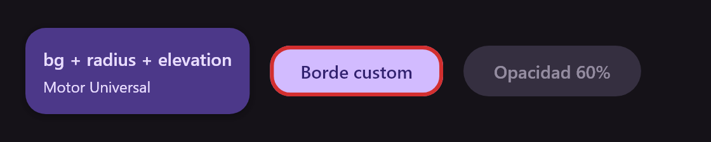
| Parámetro | Tipo | Por defecto | Qué hace |
|---|---|---|---|
.width(px) / .height(px) | float | Automático | Fija un ancho o alto exacto en píxeles lógicos (dp). |
.size(w, h) | float, float | Automático | Atajo para fijar ancho y alto en una sola llamada. |
.min_size(w, h) / .max_size(w, h) | float, float | None | Define límites mínimos y máximos de tamaño (también disponibles por separado: .min_width, .max_width, .min_height, .max_height). |
.fill_width(enabled=True) | bool | False | Hace que el widget ocupe el 100% del ancho disponible dentro de su contenedor padre. |
.fill_height(enabled=True) | bool | False | Hace que el widget ocupe el 100% del alto disponible dentro de su contenedor padre. |
.expand(flex=1.0) | float | 0.0 | En ui.row() o ui.column(), reparte el espacio sobrante proporcionalmente según el peso flex. |
.padding(value) | float | (v, h) | (t, r, b, l) | 0 | Espaciado interno entre el borde del widget y sus hijos. |
.margin(value) | float | (v, h) | (t, r, b, l) | 0 | Espaciado externo alrededor del widget. |
.align_self(align) | "auto" | "start" | "center" | "end" | "stretch" | "auto" | Sobrescribe la alineación transversal impuesta por el contenedor padre. |
.visible(is_visible) | bool | True | Oculta o muestra el widget (y deja de ocupar espacio en el layout cuando es False). |
.bg(color) | "#hex" | Color | token M3 | None | Del tema | Sobrescribe el color de fondo del control o contenedor (ej. '#F3EDF7' o 'primary_container'). |
.fg(color) / .accent(color) | "#hex" | Color | token M3 | None | Del tema | Sobrescribe el color del contenido, texto, ícono o acento activo (switch, checkbox, slider, botón). |
.border(color, width=1.0) | ColorSpec, float | None, 1.0 | Aplica un borde nítido interior (box-sizing: border-box) del color y grosor indicados. |
.shape(val) / .radius(val) | ShapeToken | float | (tl, tr, br, bl) | Del control | Sobrescribe el radio de esquinas usando la escala oficial M3 Expressive de 10 niveles ('none'=0, 'extra_small'=4, 'small'=8, 'medium'=12, 'large'=16, 'large_increased'=20, 'extra_large'=28, 'extra_large_increased'=32, 'extra_extra_large'=48, 'full'=9999), tokens asimétricos ('extra_large_top', 'large_end', 'medium_bottom', 'small_start'), número en dp o tupla explícita de 4 esquinas. |
.elevation(level, shadow_color=None) | int (0..5), ColorSpec | 0 | Aplica elevación Material Design 3 (niveles 0 a 5) con sombra ambiental y direccional personalizable. |
.opacity(alpha) | float (0.0..1.0) | 1.0 | Aplica transparencia acelerada por GPU al control y a todo su subárbol de hijos. |
.tooltip(text) | str | None | None | Adjunta un Tooltip oficial de Material Design 3 que aparece automáticamente al pasar el mouse. |
with ui.row(gap=16, align="center").padding(20):
with ui.column(gap=4).padding(14).bg("primary_container").radius(16).elevation(2):
ui.text("bg + radius + elevation", role="label_large", color="on_primary_container")
ui.text("Motor Universal", role="body_small", color="on_primary_container")
ui.button("Borde custom", variant="filled").border("#D32F2F", 3).radius((16, 4, 16, 4))
ui.button("Opacidad 60%", variant="tonal").opacity(0.6)Theme & 100% Material Design 3 Styles (HCT + Expressive)
v1.2.0 · 100% M3Theme implementa de forma integral los 6 subsistemas oficiales de estilos de Material Design 3 y M3 Expressive (m3.material.io/styles): Color (espacio perceptual HCT con 7 variantes de Dynamic Scheme, 3 niveles de contraste WCAG y los 12 roles *_fixed constantes entre Light y Dark), Typography (30 estilos oficiales: 15 Baseline + 15 Emphasized, con separación de brand_font para Display/Headline y plain_font para Title/Body/Label), Shape (escala completa de 10 niveles hasta extra_extra_large 48dp y esquinas asimétricas), Elevation (niveles 0..5 con tint tonal + sombra ambiental y direccional), Motion (MotionScheme Expressive/Standard con los 6 tokens de Spring, 10 curvas cubic-bezier exactas y 16 duraciones) e Icons (4,304 Material Symbols con ejes variables FILL, wght, GRAD y opsz). Cualquier cambio en theme.seed, theme.mode, theme.contrast, theme.scheme o theme.motion_scheme regenera los tokens y repinta en vivo todas las ventanas suscritas.
| Parámetro | Tipo | Por defecto | Qué hace |
|---|---|---|---|
seed | str | Color | "#6750A4" | Color semilla hexadecimal o instancia Color desde el cual el motor HCT deriva las 6 paletas tonales (Primary, Secondary, Tertiary, Neutral, Neutral Variant y Error). |
mode | "light" | "dark" | "light" | Esquema visual claro u oscuro. Cambiable en caliente con theme.mode = 'dark' o theme.toggle_mode(). En Windows 10/11 sincroniza automáticamente la barra nativa DWM. |
contrast | "standard" | "medium" | "high" | "standard" | Nivel de contraste oficial de M3 (alcanza contraste WCAG AAA en 'high', ajustando tanto roles normales como los 12 roles Fixed Accent). |
scheme | "tonal_spot" | "vibrant" | "expressive" | "neutral" | "monochrome" | "fidelity" | "content" | "tonal_spot" | Las 7 variantes oficiales de Dynamic Scheme de Material Design 3: desde 'tonal_spot' equilibrado hasta 'vibrant', 'expressive' (rotación audaz de matiz), 'neutral', 'monochrome' (escala de grises pura), 'fidelity' y 'content'. |
motion_scheme | "expressive" | "standard" | "expressive" | Esquema de física de movimiento de M3 Expressive: 'expressive' (resortes elásticos y expresivos) o 'standard' (amortiguación sobria para productividad). Accesible en theme.motion. |
font_family | str | "Segoe UI" | Familia tipográfica base usada por Skia para todos los roles cuando no se separan brand_font / plain_font. Podés cargar .ttf/.otf propios con ui.load_font(ruta). |
brand_font / plain_font | str | None | None | Separación oficial de fuentes de Material 3: brand_font se aplica automáticamente a los roles Display y Headline (encabezados editoriales), mientras que plain_font se usa en Title, Body y Label (lectura densa). |
theme.colors.*_fixed | 12 roles Color | Automático | Roles Fixed Accent constantes entre Light y Dark: primary_fixed, primary_fixed_dim, on_primary_fixed, on_primary_fixed_variant (y sus pares en secondary y tertiary). Ideales para badges de marca, FABs o encabezados que no deben invertirse al cambiar a modo oscuro. |
theme.shape | ShapeScale (10 niveles) | Automático | Escala completa M3 Expressive: none (0), extra_small (4), small (8), medium (12), large (16), large_increased (20), extra_large (28), extra_large_increased (32), extra_extra_large (48), full (9999), más helpers .top(), .bottom(), .start(), .end(). |
theme.typography | TypographyScale (30 roles) | Automático | 15 estilos Baseline + 15 estilos Emphasized accesibles con theme.typography.get('headline_large', emphasized=True) o role='headline_large_emphasized'. |
theme.motion | MotionScheme | Expressive | Expone los 6 tokens oficiales de Spring (fast/default/slow × spatial/effects), las 10 curvas cubic-bezier exactas en theme.motion.easing y los 16 tokens de duración en theme.motion.durations. |
from quantumgui import Theme, ui
# 1. Crear un tema 100% Material Design 3 + M3 Expressive:
theme = Theme(
seed="#0061A4",
mode="light",
contrast="standard",
scheme="expressive", # tonal_spot | vibrant | expressive | neutral | monochrome | fidelity | content
motion_scheme="expressive", # expressive | standard
brand_font="Georgia", # Display & Headline
plain_font="Segoe UI", # Title, Body & Label
)
# 2. Usar los 12 roles Fixed Accent (se mantienen constantes en Light y Dark):
with ui.card(variant="filled").bg("primary_fixed").shape("extra_large_top").padding(20):
ui.text("Encabezado de marca", role="headline_medium_emphasized", color="on_primary_fixed")
ui.text("Subtítulo sutil", role="body_medium", color="on_primary_fixed_variant")
# 3. Cambiar esquema, contraste o modo en tiempo real (repinta todas las ventanas):
theme.scheme = "vibrant"
theme.contrast = "high"
theme.motion_scheme = "standard"
theme.toggle_mode()ui.state
ReactividadContenedor reactivo liviano (State[T]) para enlazar datos en doble sentido (two-way binding) entre múltiples controles usando bind=mi_estado, o actualizar textos y vistas automáticamente cuando cambia mi_estado.value.
| Parámetro | Tipo | Por defecto | Qué hace |
|---|---|---|---|
initial | T (cualquier tipo) | Requerido | Valor inicial almacenado en state.value. |
.value | T (propiedad) | initial | Lee o actualiza el valor; al asignarlo notifica a todos los widgets suscriptos y solicita repintado. |
.subscribe(callback) | Callable[[T], None] | — | Registra una función propia que se dispara cada vez que cambia el valor. |
contador = ui.state(0)
nombre = ui.state("Ada")
ui.text(lambda: f"Hola {nombre.value}, clicks: {contador.value}")
ui.text_field("Nombre", bind=nombre)
ui.button("+1", on_click=lambda: setattr(contador, "value", contador.value + 1))ui.window / ui.run
Multi-Ventana GPUCrea una ventana nativa del sistema operativo acelerada por GPU (GLFW + OpenGL + Skia) con soporte High-DPI (Retina/4K), sincronización automática de barra de título en Modo Oscuro en Windows 10/11 (DWM), color de barra custom, modo sin bordes (frameless=True), transparencia (transparent=True), ícono Skia sin Pillow, Drag & Drop nativo de archivos del SO (on_file_drop) y multi-ventana simultánea.
| Parámetro | Tipo | Por defecto | Qué hace |
|---|---|---|---|
title / width / height | str / int / int | "QuantumGUI" / 960 / 680 | Título y dimensiones iniciales de la ventana en píxeles lógicos (dp). |
theme | Theme | None | None | Instancia de Theme M3. En Windows 10/11 sincroniza automáticamente la barra nativa Light/Dark. |
resizable / frameless | bool / bool | True / False | Permite redimensionar u oculta la decoración nativa para crear una barra de título propia. |
transparent / opacity | bool / float | False / 1.0 | Framebuffer transparente (alpha 0) y opacidad global de la ventana [0.05..1.0]. |
always_on_top / maximized / fullscreen | bool | False | Ventana flotante siempre encima, inicio maximizado o pantalla completa en el monitor principal. |
center / position | bool / tuple[int, int] | None | True / None | Centra la ventana automáticamente en el monitor principal o fija posición exacta (x, y). |
min_size / max_size | tuple[int, int] | None | None | Límites mínimo y máximo de redimensionamiento en píxeles. |
icon / titlebar_color | str | Path | Image / ColorSpec | None | None | Ícono de ventana decodificado con Skia (PNG/JPG/ICO) y color personalizado de barra en Windows 11. |
transition | "none" | "fade" | "fade_through" | "shared_axis_y" | "shared_axis_z" | "none" | Transición M3 nativa al abrir la ventana: anima suavemente la opacidad GLFW y el canvas Skia con los resortes de theme.motion (ideal para apps multi-ventana y fichas modales). |
on_close / on_resize / on_focus / on_file_drop | Callables | None | None | Eventos nativos; si on_close() devuelve False cancela el cierre, y on_file_drop recibe archivos soltados desde el SO. |
main / ui.set_main_window(win) / win.set_as_main() | bool / Función / Método | False | Declara la ventana como principal: al cerrarse, se cierran todas las ventanas secundarias y finaliza el programa. |
win.minimize() / .maximize() / .restore() / .set_fullscreen() / .move_by() | Métodos | — | Control total en tiempo real de estado, posición, título, opacidad e ícono. |
win.run() / ui.run(*wins) / win.open() / win.close() / ui.quit() | Ciclo de vida | — | Abre una o varias ventanas simultáneas, cierra una o finaliza toda la app limpiamente. |
theme = Theme(seed="#6750A4", mode="dark")
win = ui.window(
"Quantum ERP",
width=1100,
height=720,
theme=theme,
center=True,
min_size=(800, 560),
titlebar_color="#1C1B1F",
on_close=lambda: True, # Devuelve False para confirmar antes de cerrar
on_file_drop=lambda archivos: print("Soltados:", archivos),
)
with win:
with ui.column(gap=16).padding(24):
ui.text("Ventana 100% personalizable", role="headline_medium")
win.run()ui.column
LayoutContenedor flex vertical que apila sus hijos de arriba hacia abajo dentro de un bloque with. Es el bloque principal para estructurar páginas, formularios y paneles.
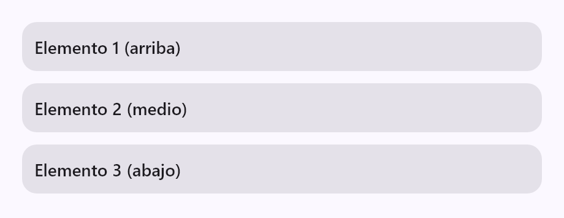
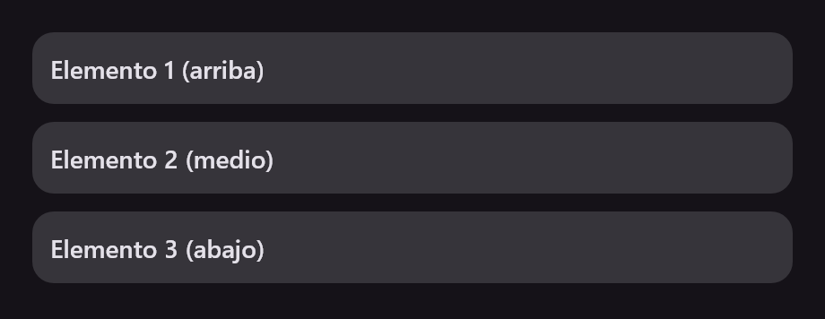
| Parámetro | Tipo | Por defecto | Qué hace |
|---|---|---|---|
gap | float | 0.0 | Separación vertical en dp entre cada hijo consecutivo. |
align | "start" | "center" | "end" | "stretch" | "start" | Alineación horizontal de los hijos ('stretch' los estira al ancho disponible). |
justify | "start" | "center" | "end" | "space_between" | "start" | Distribución vertical de los hijos cuando sobra altura. |
with ui.column(gap=10, align="stretch").padding(18):
with ui.card(variant="filled", padding=10):
ui.text("Elemento 1 (arriba)", role="label_large")
with ui.card(variant="filled", padding=10):
ui.text("Elemento 2 (medio)", role="label_large")
with ui.card(variant="filled", padding=10):
ui.text("Elemento 3 (abajo)", role="label_large")ui.row
LayoutContenedor flex horizontal que coloca sus hijos uno al lado del otro. Soporta salto de línea automático (wrap=True) y expansión proporcional con .expand() en sus hijos.
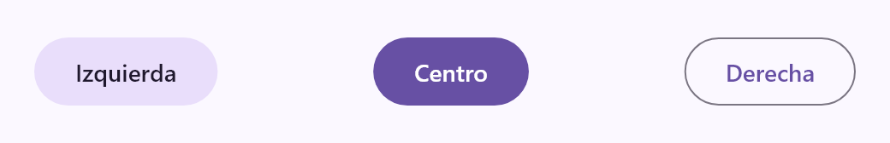
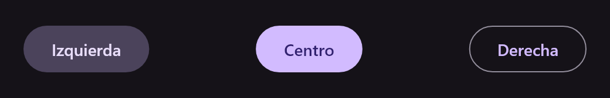
| Parámetro | Tipo | Por defecto | Qué hace |
|---|---|---|---|
gap | float | 0.0 | Separación horizontal en dp entre hijos consecutivos. |
align | "start" | "center" | "end" | "stretch" | "center" | Alineación vertical de los elementos dentro de la fila. |
justify | "start" | "center" | "end" | "space_between" | "start" | Distribución horizontal cuando el ancho es mayor que la suma de hijos. |
wrap | bool | False | Si es True, los hijos que no entran saltan automáticamente a la siguiente línea. |
run_gap | float | None | None (= gap) | Separación vertical entre líneas cuando wrap=True. |
with ui.row(gap=12, align="center", justify="space_between").padding(20).fill_width():
ui.button("Izquierda", variant="tonal")
ui.button("Centro", variant="filled")
ui.button("Derecha", variant="outlined")ui.card
Contenedor M3Tarjeta oficial de Material Design 3 con disposición vertical interna (hereda de Column), esquinas redondeadas medium (12dp) y soporte opcional de clic interactivo con efecto Ripple.
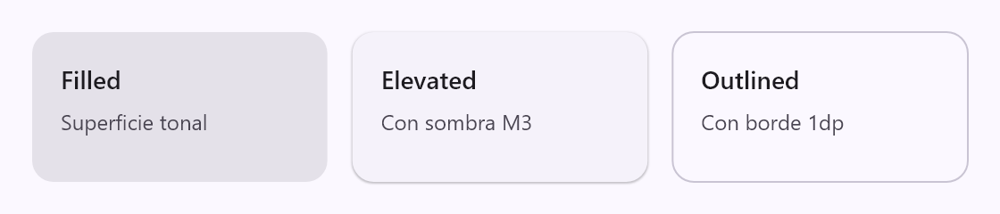
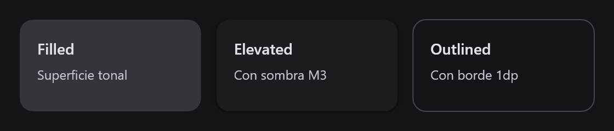
| Parámetro | Tipo | Por defecto | Qué hace |
|---|---|---|---|
variant | "filled" | "elevated" | "outlined" | "filled" | Estilo M3: fondo tonal ('filled'), sombra nivel 1 ('elevated') o borde 1dp ('outlined'). |
gap | float | 12.0 | Separación vertical en dp entre los widgets dentro de la tarjeta. |
align | "start" | "center" | "end" | "stretch" | "stretch" | Alineación horizontal de los hijos dentro de la tarjeta. |
padding | float | (v, h) | (t, r, b, l) | 16.0 | Relleno interno de la tarjeta en dp. |
on_click | Callable[[], None] | None | None | Si se provee, convierte toda la tarjeta en clickeable con cursor pointer, hover y ripple. |
with ui.row(gap=14, align="stretch").fill_width():
with ui.card(variant="filled", gap=6).expand():
ui.text("Filled", role="title_small")
ui.text("Superficie tonal", role="body_small", color="on_surface_variant")
with ui.card(variant="elevated", gap=6).expand():
ui.text("Elevated", role="title_small")
ui.text("Con sombra M3", role="body_small", color="on_surface_variant")
with ui.card(variant="outlined", gap=6).expand():
ui.text("Outlined", role="title_small")
ui.text("Con borde 1dp", role="body_small", color="on_surface_variant")ui.grid
LayoutContenedor en grilla de columnas de igual ancho. Distribuye automáticamente a todos sus hijos en filas de columns columnas, ideal para galerías, dashboards de KPIs y formularios multi-columna.
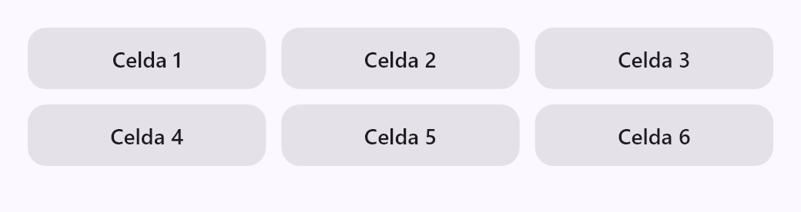
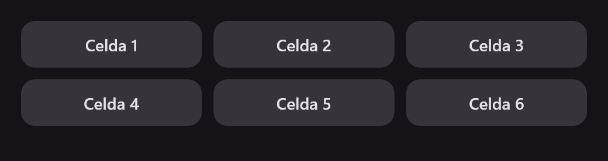
| Parámetro | Tipo | Por defecto | Qué hace |
|---|---|---|---|
columns | int | 3 | Cantidad fija de columnas de ancho uniforme por fila. |
gap | float | 16.0 | Separación horizontal en dp entre columnas. |
row_gap | float | None | None (= gap) | Separación vertical entre filas; si es None usa el mismo valor que gap. |
with ui.grid(columns=3, gap=10):
for i in range(1, 7):
with ui.card(variant="filled", padding=10):
ui.text(f"Celda {i}", role="label_large", align="center").fill_width()ui.split_view
LayoutPanel dividido horizontalmente en dos áreas (izquierda y derecha) separadas por un tirador M3 interactivo que el usuario puede arrastrar con el mouse para redimensionar ambos paneles en tiempo real.
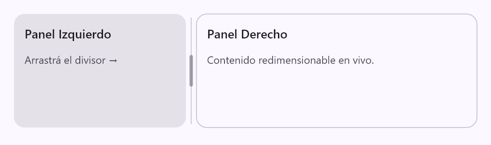
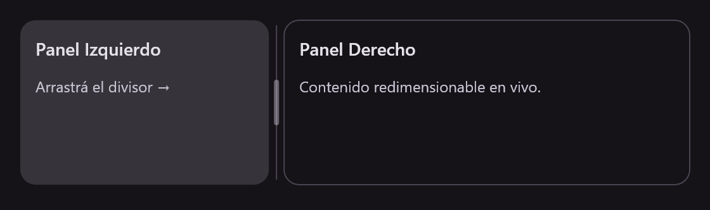
| Parámetro | Tipo | Por defecto | Qué hace |
|---|---|---|---|
ratio | float (0..1) | 0.35 | Proporción inicial del ancho asignado al panel izquierdo (0.35 = 35%). |
min_ratio | float | 0.15 | Límite mínimo al que el usuario puede encoger el panel izquierdo. |
max_ratio | float | 0.85 | Límite máximo al que el usuario puede expandir el panel izquierdo. |
height | float | 260.0 | Alto del contenedor dividido en dp (también puede usarse .height() o .fill_height()). |
with ui.split_view(ratio=0.38, height=130):
with ui.card(variant="filled", padding=12).fill_height():
ui.text("Panel Izquierdo", role="title_small")
ui.text("Arrastrá el divisor →", role="body_small", color="on_surface_variant")
with ui.card(variant="outlined", padding=12).fill_height():
ui.text("Panel Derecho", role="title_small")
ui.text("Contenido redimensionable en vivo.", role="body_small", color="on_surface_variant")ui.scroll_view
LayoutContenedor vertical con recorte de viewport independiente, desplazamiento fluido con la rueda del mouse y barra de scroll redondeada estilo Material Design 3.
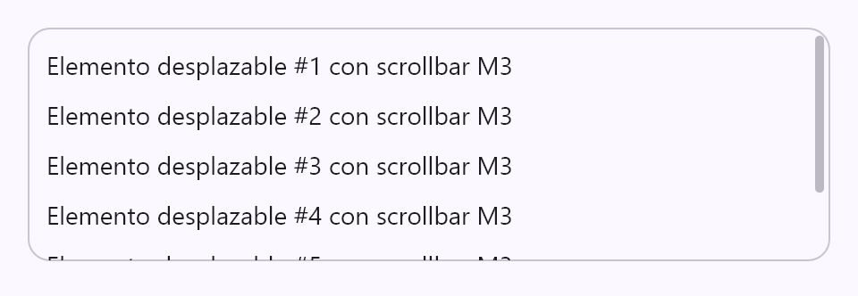
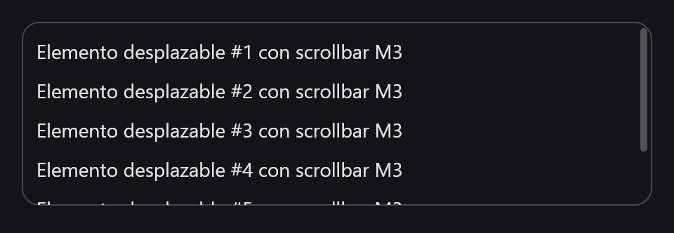
| Parámetro | Tipo | Por defecto | Qué hace |
|---|---|---|---|
gap | float | 0.0 | Separación vertical en dp entre elementos hijos. |
align | "start" | "center" | "end" | "stretch" | "stretch" | Alineación horizontal de los hijos dentro del área desplazable. |
show_scrollbar | bool | True | Muestra u oculta el indicador visual de barra de scroll a la derecha. |
wheel_step | float | 44.0 | Cantidad de píxeles que se desplaza por cada paso de la rueda del mouse. |
with ui.scroll_view(gap=8).height(130).border("outline_variant", 1).radius(12).padding(10):
for i in range(1, 7):
ui.text(f"Elemento desplazable #{i} con scrollbar M3", role="body_medium")ui.divider
LayoutLínea divisoria sutil de 1dp usando el token outline_variant para separar secciones o grupos de contenido.
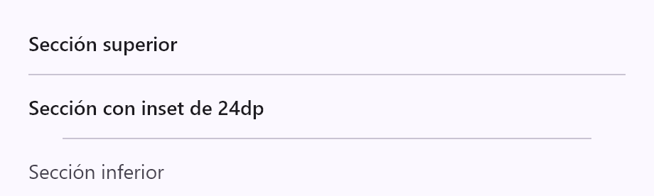
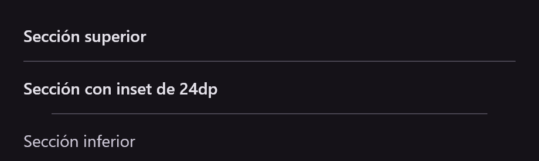
| Parámetro | Tipo | Por defecto | Qué hace |
|---|---|---|---|
vertical | bool | False | Si es True, dibuja un separador vertical (ideal dentro de ui.row); si es False, horizontal. |
inset | float | 0.0 | Margen simétrico en dp a ambos extremos de la línea divisoria. |
with ui.column(gap=12, align="stretch"):
ui.text("Sección superior", role="title_small")
ui.divider()
ui.text("Sección con inset de 24dp", role="title_small")
ui.divider(inset=24)ui.top_app_bar
NavegaciónBarra superior Material Design 3 de 64dp de alto con título, subtítulo opcional e ícono de navegación izquierdo. Todos los controles declarados dentro de su bloque with se alinean automáticamente a la derecha como acciones.
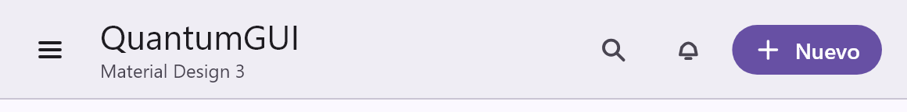
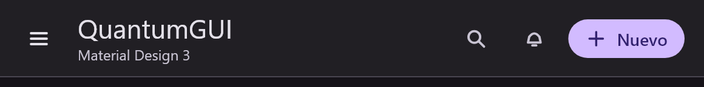
| Parámetro | Tipo | Por defecto | Qué hace |
|---|---|---|---|
title | str | Requerido | Título principal de la pantalla o aplicación. |
subtitle | str | None | None | Subtítulo secundario debajo del título principal. |
leading_icon | str | None | None | Ícono vectorial a la izquierda (ej. 'menu' o 'chevron_left'). |
on_leading_click | Callable[[], None] | None | None | Callback al pulsar el ícono izquierdo (ej. abrir un NavigationDrawer). |
variant | "small" | "center_aligned" | "small" | Alinea el título a la izquierda ('small') o centrado ('center_aligned'). |
with ui.top_app_bar("QuantumGUI", subtitle="Material Design 3", leading_icon="menu"):
ui.icon_button("search")
ui.icon_button("notifications")
ui.button("Nuevo", variant="filled", size="small", icon="add")ui.navigation_rail
NavegaciónBarra de navegación vertical compacta de 80dp pensada para apps de escritorio y tablets. Resalta la sección activa con la píldora indicadora oficial de Material Design 3.

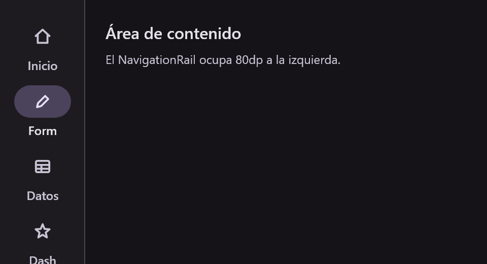
| Parámetro | Tipo | Por defecto | Qué hace |
|---|---|---|---|
items | Sequence[tuple[str, str]] | Requerido | Lista de pares (icono, etiqueta) para cada destino de navegación. |
selected | int | 0 | Índice inicial del destino activo (empezando en 0). |
bind | State[int] | None | None | Estado reactivo enlazado en doble sentido al índice seleccionado. |
on_change | Callable[[int], None] | None | None | Callback ejecutado con el nuevo índice cuando el usuario cambia de sección. |
pagina = ui.state(1)
ui.navigation_rail(
[("home", "Inicio"), ("edit", "Form"), ("table", "Datos"), ("star", "Dash")],
bind=pagina,
)ui.tabs
NavegaciónBarra de pestañas Material Design 3 con indicador deslizante animado y soporte para íconos opcionales. Incluye variantes primary (indicador redondeado corto) y secondary (indicador de ancho completo).
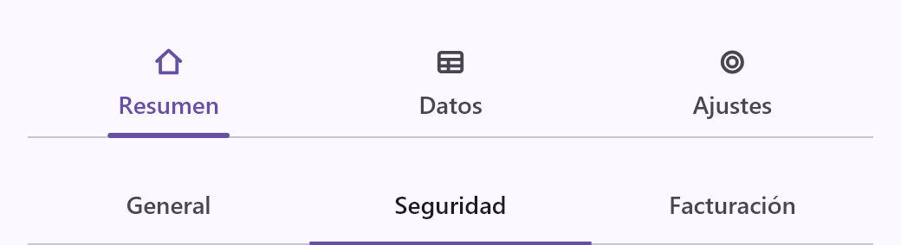
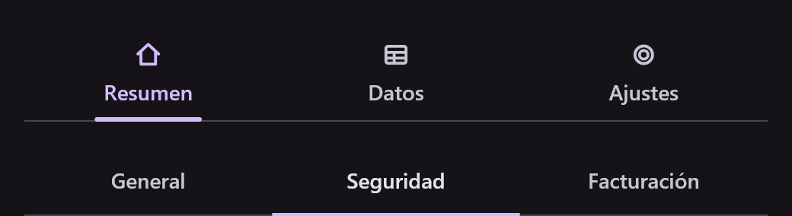
| Parámetro | Tipo | Por defecto | Qué hace |
|---|---|---|---|
items | Sequence[str | tuple[str, str]] | Requerido | Lista de etiquetas o tuplas (icono, etiqueta) para cada pestaña. |
selected | int | 0 | Índice inicial de la pestaña activa. |
variant | "primary" | "secondary" | "primary" | Estilo oficial M3 de pestañas primarias o secundarias. |
bind | State[int] | None | None | Estado reactivo vinculado al índice de la pestaña activa. |
on_change | Callable[[int], None] | None | None | Callback al cambiar de pestaña. |
ui.tabs([("home", "Resumen"), ("table", "Datos"), ("settings", "Ajustes")], variant="primary")
ui.tabs(["General", "Seguridad", "Facturación"], selected=1, variant="secondary")ui.button
AcciónBotón común Material Design 3 con las 5 variantes oficiales, 3 tamaños predefinidos, animación M3 Expressive de morph en las esquinas al presionar, capas de estado y onda Ripple.

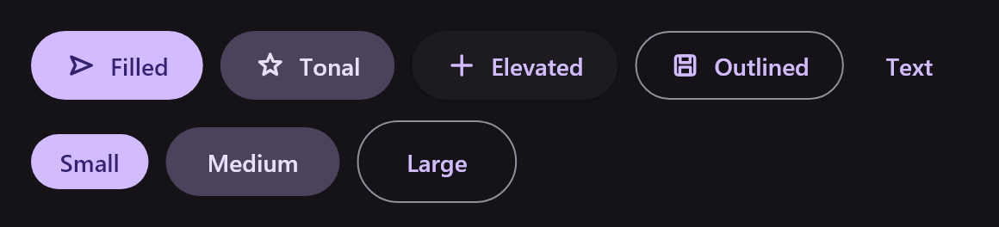
| Parámetro | Tipo | Por defecto | Qué hace |
|---|---|---|---|
label | str | Requerido | Texto visible dentro del botón. |
variant | "filled" | "tonal" | "elevated" | "outlined" | "text" | "filled" | Jerarquía visual M3 del botón (desde acción principal 'filled' hasta secundaria 'text'). |
size | "small" | "medium" | "large" | "medium" | Altura y padding preestablecidos: 32dp (small), 40dp (medium), 48dp (large). |
icon | str | None | None | Ícono vectorial opcional a la izquierda del texto ('send', 'save', 'add', 'star', etc.). |
disabled | bool | False | Desactiva la interacción y aplica los colores apagados oficiales de M3. |
on_click | Callable[[], None] | None | None | Función ejecutada cuando el usuario hace clic y suelta dentro del botón. |
with ui.row(gap=10, wrap=True):
ui.button("Filled", variant="filled", icon="send")
ui.button("Tonal", variant="tonal", icon="star")
ui.button("Elevated", variant="elevated", icon="add")
ui.button("Outlined", variant="outlined", icon="save")
ui.button("Text", variant="text")
ui.button("Large", size="large", variant="outlined")ui.fab
AcciónFloating Action Button (FAB) oficial de Material Design 3 con elevación nivel 3 (sube a 4 en hover). Si le pasás label se transforma automáticamente en un Extended FAB.
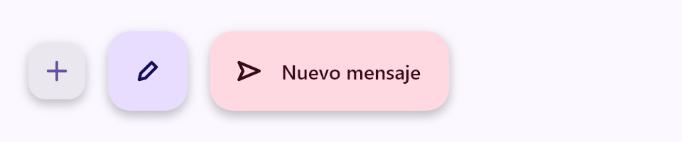
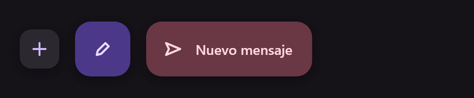
| Parámetro | Tipo | Por defecto | Qué hace |
|---|---|---|---|
icon | str | "add" | Ícono vectorial principal del botón flotante. |
label | str | None | None | Si se define texto, convierte el FAB en Extended FAB con ícono + etiqueta. |
variant | "primary" | "secondary" | "tertiary" | "surface" | "primary" | Rol de contenedor tonal M3 usado como color del FAB. |
size | "small" | "medium" | "large" | "medium" | Tamaño del FAB cuadrado: 40dp (small), 56dp (medium) o 96dp (large). |
disabled | bool | False | Desactiva interacción y elimina la elevación. |
on_click | Callable[[], None] | None | None | Callback al pulsar el FAB. |
with ui.row(gap=16, align="center"):
ui.fab("add", size="small", variant="surface")
ui.fab("edit", size="medium", variant="primary")
ui.fab("send", label="Nuevo mensaje", variant="tertiary")ui.text_field
FormularioCampo de texto completo Material Design 3 (outlined con muesca animada en el borde o filled) con etiqueta flotante, selección de texto por arrastre/Shift, Ctrl+C/V/X/A, íconos, prefijo/sufijo, modo contraseña y validación.


| Parámetro | Tipo | Por defecto | Qué hace |
|---|---|---|---|
label | str | Requerido | Etiqueta descriptiva que flota hacia arriba al enfocar o escribir. |
variant | "outlined" | "filled" | "outlined" | Estilo de caja M3: contorno completo ('outlined') o relleno con línea inferior ('filled'). |
value | str | "" | Texto inicial del campo. |
placeholder | str | "" | Texto guía tenue que aparece cuando el campo está enfocado y vacío. |
supporting_text | str | None | None | Texto de ayuda mostrado debajo del campo. |
error_text | str | None | None | Mensaje de error en rojo; al asignarlo cambia automáticamente el borde y la etiqueta al color error. |
leading_icon / trailing_icon | str | None | None | Íconos vectoriales opcionales al inicio o al final del campo. |
prefix / suffix | str | None | None | Texto fijo antes o después del valor (ej. '$' o 'kg'). |
password | bool | False | Oculta los caracteres con puntos (•) para contraseñas. |
max_length | int | None | None | Limita la cantidad máxima de caracteres y muestra un contador automático abajo a la derecha. |
disabled | bool | False | Bloquea la edición y aplica estilo deshabilitado. |
bind | State[str] | None | None | Enlace bidireccional con un ui.state(). |
on_change | Callable[[str], None] | None | None | Callback ejecutado cada vez que cambia el texto. |
on_submit | Callable[[str], None] | None | None | Callback ejecutado al presionar Enter. |
ui.text_field(
"Nombre",
variant="outlined",
value="Ada Lovelace",
leading_icon="person",
supporting_text="Campo outlined",
).fill_width()ui.text_area
FormularioEditor de texto multilínea M3 con soporte para saltos de línea (Enter), navegación vertical, contador de caracteres y variantes outlined / filled.
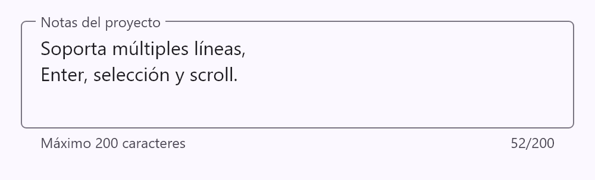
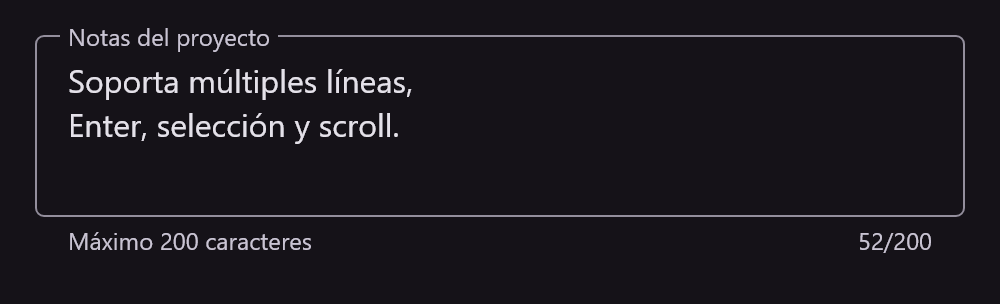
| Parámetro | Tipo | Por defecto | Qué hace |
|---|---|---|---|
label | str | Requerido | Etiqueta flotante del área de texto. |
variant | "outlined" | "filled" | "outlined" | Estilo de contenedor M3. |
value | str | "" | Contenido inicial (admite '\n'). |
rows | int | 4 | Cantidad de líneas visibles que determinan la altura inicial. |
placeholder | str | "" | Texto sugerido cuando está vacío. |
supporting_text / error_text | str | None | None | Mensaje de ayuda o de error debajo del campo. |
max_length | int | None | None | Límite máximo de caracteres con contador automático. |
disabled | bool | False | Deshabilita edición. |
bind / on_change | State[str] / Callable | None | Enlace reactivo y callback de cambio. |
ui.text_area(
"Notas del proyecto",
variant="outlined",
value="Soporta múltiples líneas,\nEnter, selección y scroll.",
rows=3,
max_length=200,
supporting_text="Máximo 200 caracteres",
).fill_width()ui.select
FormularioMenú desplegable expuesto (Exposed Dropdown Menu) oficial de Material Design 3 con overlay flotante sobre la escena, etiqueta animada y validación.
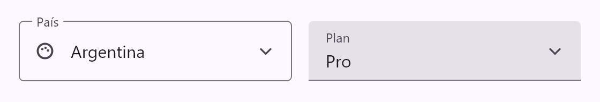
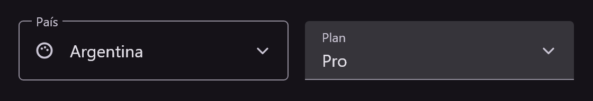
| Parámetro | Tipo | Por defecto | Qué hace |
|---|---|---|---|
label | str | Requerido | Etiqueta flotante del selector. |
options | Sequence[str] | Requerido | Lista de opciones mostradas en el menú desplegable. |
variant | "outlined" | "filled" | "outlined" | Estilo de caja del disparador. |
value | str | None | None | Opción seleccionada inicialmente. |
placeholder | str | "" | Texto mostrado si no hay opción seleccionada. |
supporting_text / error_text | str | None | None | Texto de ayuda o mensaje de error en el pie. |
leading_icon | str | None | None | Ícono vectorial a la izquierda del campo. |
disabled | bool | False | Desactiva la apertura del menú. |
bind / on_change | State / Callable[[str], None] | None | Enlace reactivo y callback al elegir una opción. |
ui.select("País", ["Argentina", "México", "España"], value="Argentina", variant="outlined")
ui.select("Plan", ["Starter", "Pro", "Enterprise"], value="Pro", variant="filled")ui.date_picker
FormularioSelector de fecha M3 con calendario mensual interactivo flotante (navegación por mes/año y resaltado del día actual y seleccionado).
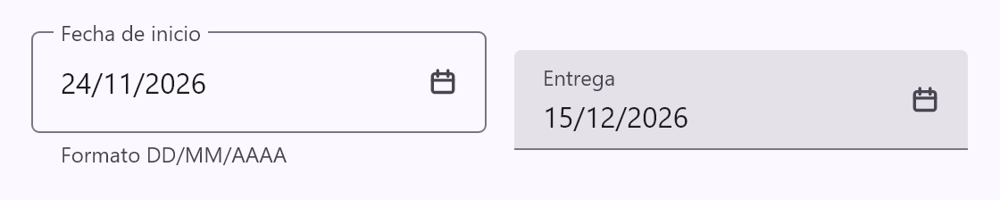
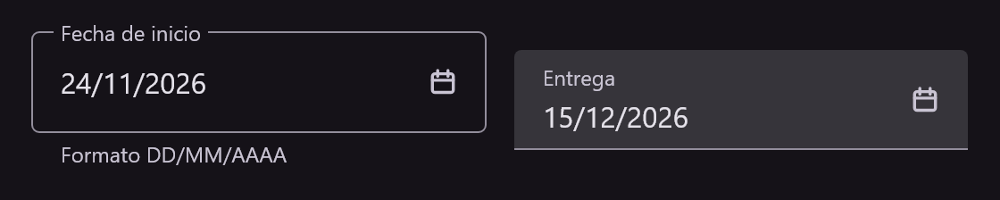
| Parámetro | Tipo | Por defecto | Qué hace |
|---|---|---|---|
label | str | "Fecha" | Etiqueta flotante del campo. |
value | datetime.date | None | None | Fecha seleccionada inicialmente. |
variant | "outlined" | "filled" | "outlined" | Estilo de caja del disparador. |
supporting_text / error_text | str | None | None | Ayuda o mensaje de error debajo del control. |
disabled | bool | False | Impide abrir el calendario. |
bind / on_change | State[date | None] / Callable | None | Estado reactivo y callback al elegir una fecha. |
from datetime import date
ui.date_picker("Fecha de inicio", value=date(2026, 11, 24), variant="outlined", supporting_text="Formato DD/MM/AAAA")ui.time_picker
FormularioSelector de hora Material Design 3 con reloj analógico interactivo (Clock Dial) que soporta formato 24h (doble anillo) y 12h (con selector AM/PM).
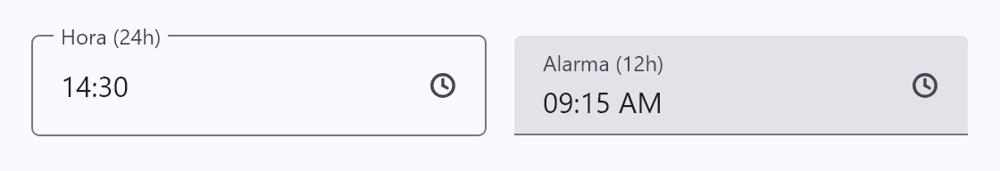
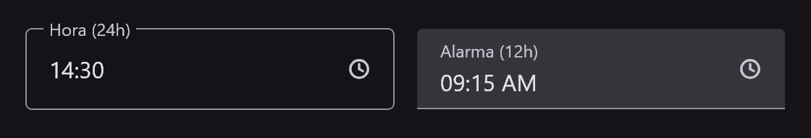
| Parámetro | Tipo | Por defecto | Qué hace |
|---|---|---|---|
label | str | "Hora" | Etiqueta flotante del campo. |
value | datetime.time | None | None | Hora inicial seleccionada. |
use_24h | bool | True | Si es True usa reloj 24h (00-23); si es False usa reloj 12h con botones AM/PM. |
variant | "outlined" | "filled" | "outlined" | Estilo visual del campo. |
supporting_text / error_text | str | None | None | Texto de ayuda o error. |
disabled | bool | False | Deshabilita el selector. |
bind / on_change | State[time | None] / Callable | None | Enlace reactivo y callback al confirmar hora. |
from datetime import time as dt_time
ui.time_picker("Hora (24h)", value=dt_time(14, 30), use_24h=True)
ui.time_picker("Alarma (12h)", value=dt_time(9, 15), use_24h=False, variant="filled")ui.number_input
FormularioCampo numérico con botones integrados − y +, validación de rango mínimo/máximo, paso configurable y formato decimal.
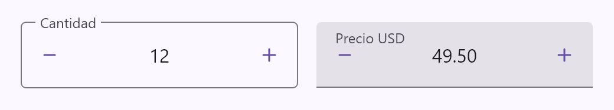
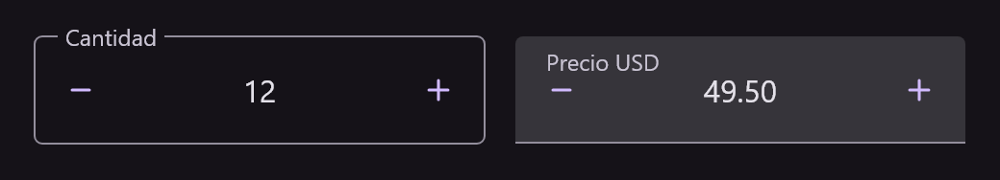
| Parámetro | Tipo | Por defecto | Qué hace |
|---|---|---|---|
label | str | Requerido | Etiqueta del campo numérico. |
variant | "outlined" | "filled" | "outlined" | Estilo del contenedor. |
value | float | 0 | Valor numérico inicial. |
min / max | float | None | None | Límites inferior y superior permitidos (clamping automático). |
step | float | 1 | Incremento o decremento al pulsar + / − o flechas arriba/abajo. |
decimals | int | 0 | Cantidad de decimales mostrados al formatear el número. |
disabled | bool | False | Deshabilita la edición y los botones. |
bind / on_change | State[float] / Callable | None | Enlace reactivo y callback al cambiar el valor. |
ui.number_input("Cantidad", value=12, min=0, max=100, step=1)
ui.number_input("Precio USD", value=49.50, step=0.5, decimals=2, variant="filled")ui.color_picker
FormularioSelector de color con muestra circular en vivo y panel emergente con paleta curada + selector HSV/hexadecimal.
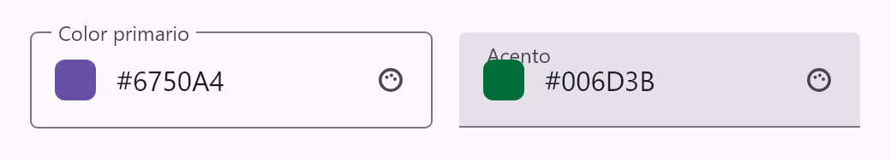
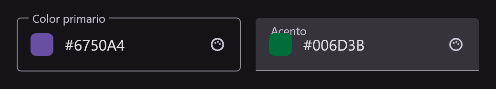
| Parámetro | Tipo | Por defecto | Qué hace |
|---|---|---|---|
label | str | "Color" | Etiqueta del campo. |
variant | "outlined" | "filled" | "outlined" | Estilo de caja M3. |
value | str | "#6750A4" | Color inicial en formato hexadecimal (#RRGGBB). |
disabled | bool | False | Deshabilita la apertura del selector. |
bind / on_change | State[str] / Callable | None | Enlace reactivo y callback al seleccionar un color. |
ui.color_picker("Color primario", value="#6750A4", variant="outlined")
ui.color_picker("Acento", value="#006D3B", variant="filled")ui.file_picker
FormularioSelector nativo de archivos y carpetas del sistema operativo integrado en un campo Material Design 3 con botón de exploración.
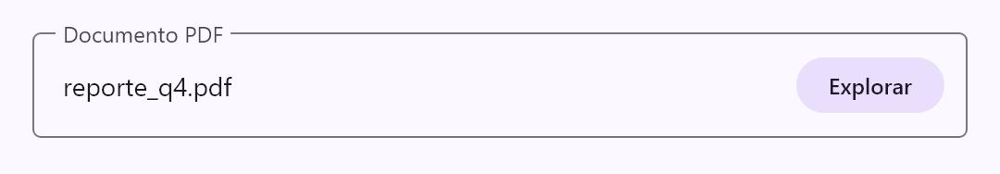
| Parámetro | Tipo | Por defecto | Qué hace |
|---|---|---|---|
label | str | "Archivo" | Etiqueta del selector. |
variant | "outlined" | "filled" | "outlined" | Estilo del contenedor. |
mode | "open" | "save" | "folder" | "open" | Tipo de diálogo nativo: abrir archivo, guardar archivo o elegir carpeta. |
filetypes | Sequence[tuple[str, str]] | (("Todos...", "*.*"),) | Filtros de extensión mostrados en el diálogo del SO (ej. [('PDF', '*.pdf')]). |
value | str | "" | Ruta inicial mostrada en el campo. |
disabled | bool | False | Bloquea la selección. |
bind / on_change | State[str] / Callable | None | Enlace reactivo y callback con la ruta elegida. |
ui.file_picker("Documento PDF", mode="open", filetypes=[("PDF", "*.pdf")]).fill_width()ui.search_bar
FormularioBarra de búsqueda estilo píldora de Material Design 3 con ícono de lupa, escritura directa, botón automático de limpiar (×) y 3 variantes.
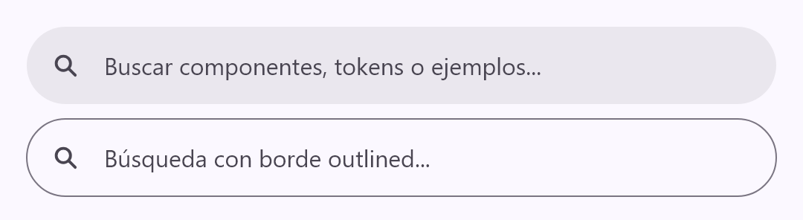
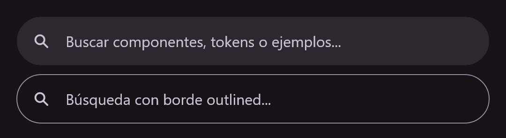
| Parámetro | Tipo | Por defecto | Qué hace |
|---|---|---|---|
placeholder | str | "Buscar..." | Texto de sugerencia cuando está vacía. |
value | str | "" | Texto inicial de búsqueda. |
variant | "filled" | "outlined" | "elevated" | "filled" | Estilo visual M3 de la barra de búsqueda. |
leading_icon | str | "search" | Ícono mostrado a la izquierda. |
disabled | bool | False | Deshabilita entrada de texto. |
bind / on_change / on_submit | State / Callables | None | Enlace reactivo, callback por cada tecla y callback al pulsar Enter. |
ui.search_bar("Buscar componentes, tokens o ejemplos...", variant="filled").fill_width()
ui.search_bar("Búsqueda con borde outlined...", variant="outlined").fill_width()ui.switch
FormularioInterruptor booleano oficial de Material Design 3 con transición suave del deslizador (thumb), ícono opcional ✓/× y soporte de color personalizado con .accent().
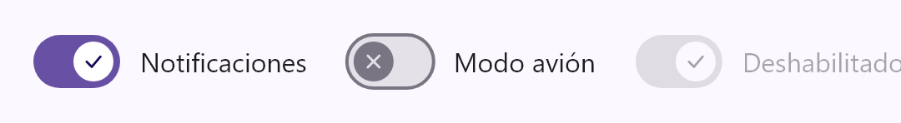
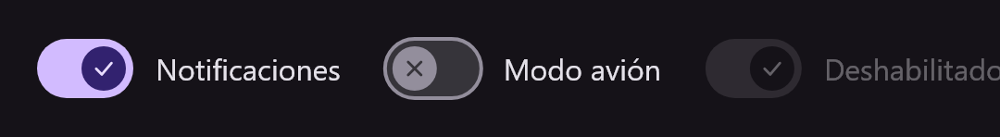
| Parámetro | Tipo | Por defecto | Qué hace |
|---|---|---|---|
value | bool | False | Estado inicial encendido (True) o apagado (False). |
label | str | None | None | Etiqueta clickeable opcional a la derecha del switch. |
show_icon | bool | True | Muestra el ícono ✓/× dentro del círculo del switch según especificación M3. |
disabled | bool | False | Desactiva la interacción. |
bind / on_change | State[bool] / Callable | None | Enlace bidireccional y callback al alternar. |
ui.switch(value=True, label="Notificaciones", show_icon=True)
ui.switch(value=False, label="Modo avión")ui.checkbox
FormularioCasilla de verificación M3 con soporte para 3 estados (True, False y None indeterminado) y estado visual de error.
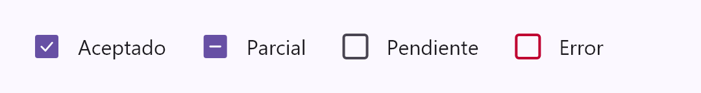
| Parámetro | Tipo | Por defecto | Qué hace |
|---|---|---|---|
value | bool | None | False | Estado inicial: True (marcado), False (desmarcado) o None (indeterminado). |
label | str | None | None | Texto clickeable junto a la casilla. |
tristate | bool | False | Si es True, alterna en ciclo False → None → True. |
error | bool | False | Pinta la casilla en el color error del tema M3. |
disabled | bool | False | Desactiva interacción. |
bind / on_change | State / Callable | None | Enlace reactivo y callback al cambiar. |
ui.checkbox(value=True, label="Aceptado")
ui.checkbox(value=None, tristate=True, label="Parcial")
ui.checkbox(value=False, error=True, label="Error")ui.radio_group
FormularioGrupo excluyente de botones de radio M3 con disposición vertical u horizontal.
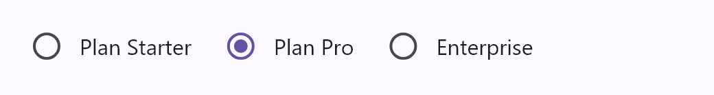
| Parámetro | Tipo | Por defecto | Qué hace |
|---|---|---|---|
options | Sequence[str] | Requerido | Lista de opciones mutuamente excluyentes. |
value | str | None | None | Opción seleccionada inicialmente. |
direction | "vertical" | "horizontal" | "vertical" | Orientación de los botones de radio. |
gap | float | 8.0 | Espaciado en dp entre opciones. |
disabled | bool | False | Deshabilita todo el grupo. |
bind / on_change | State[str | None] / Callable | None | Enlace reactivo y callback al seleccionar. |
ui.radio_group(["Plan Starter", "Plan Pro", "Enterprise"], value="Plan Pro", direction="horizontal", gap=20)ui.slider
FormularioControl deslizante continuo o discreto (con marcas de paso step) y burbuja de valor flotante al arrastrar.
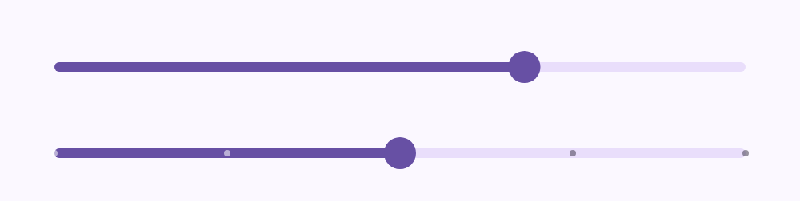
| Parámetro | Tipo | Por defecto | Qué hace |
|---|---|---|---|
value | float | 50.0 | Valor numérico inicial. |
min / max | float | 0.0 / 100.0 | Rango mínimo y máximo del deslizador. |
step | float | None | None | Si se define (ej. 1 o 5), ajusta a pasos discretos y dibuja marcas sobre la pista. |
label | bool | True | Muestra el globo indicador con el valor actual al arrastrar. |
disabled | bool | False | Bloquea el arrastre. |
bind / on_change | State[float] / Callable | None | Enlace reactivo y callback continuo al mover. |
ui.slider(value=68, min=0, max=100, label=True).fill_width()
ui.slider(value=3, min=1, max=5, step=1, label=True).fill_width()ui.range_slider
FormularioDeslizador de doble manija para seleccionar un intervalo (inicio, fin), ideal para filtros de precio, fechas o umbrales.
| Parámetro | Tipo | Por defecto | Qué hace |
|---|---|---|---|
start / end | float | 20.0 / 80.0 | Extremos inicial y final del rango seleccionado. |
min / max | float | 0.0 / 100.0 | Límites globales de la pista. |
step | float | None | None | Paso discreto opcional para ambas manijas. |
disabled | bool | False | Deshabilita el control. |
bind / on_change | State[tuple[float, float]] / Callable | None | Enlace reactivo y callback con la tupla (start, end). |
ui.range_slider(start=25, end=78, min=0, max=100, step=5).fill_width()ui.chip
FormularioEtiqueta compacta interactiva de Material Design 3 de 32dp en variantes assist, filter (con check animado), input (cerrable) y suggestion.
| Parámetro | Tipo | Por defecto | Qué hace |
|---|---|---|---|
label | str | Requerido | Texto visible del chip. |
variant | "assist" | "filter" | "input" | "suggestion" | "filter" | Comportamiento y estilo oficial M3 del chip. |
selected | bool | False | Estado seleccionado inicial (en 'filter' e 'input' alterna automáticamente al hacer clic). |
elevated | bool | False | Si es True, cambia el borde por superficie elevada con sombra M3 nivel 1. |
icon | str | None | None | Ícono vectorial opcional a la izquierda. |
closable | bool | False | Agrega el botón × a la derecha para cerrar o eliminar el chip. |
disabled | bool | False | Desactiva interacción. |
bind / on_click / on_close | State / Callables | None | Enlace reactivo, callback de clic y callback al pulsar ×. |
with ui.row(gap=10, wrap=True):
ui.chip("Assist", variant="assist", icon="star")
ui.chip("Filtro activo", variant="filter", selected=True)
ui.chip("Etiqueta", variant="input", closable=True)
ui.chip("Elevado", variant="assist", elevated=True, icon="palette")ui.autocomplete
Formulario ProCampo selector con búsqueda y filtrado instantáneo en vivo sobre listas largas, con navegación por teclado (↑/↓/Enter/Escape).
| Parámetro | Tipo | Por defecto | Qué hace |
|---|---|---|---|
label | str | Requerido | Etiqueta del campo. |
options | Sequence[str] | Requerido | Lista completa de opciones filtrables. |
value | str | "" | Texto inicial seleccionado. |
variant | "outlined" | "filled" | "outlined" | Estilo de caja M3. |
max_suggestions | int | 6 | Cantidad máxima de coincidencias visibles en el desplegable. |
bind / on_change | State[str] / Callable | None | Enlace reactivo y callback al escribir o seleccionar. |
ui.autocomplete("País", ["Argentina", "México", "España"], value="Argentina")ui.tag_input
Formulario ProEntrada multi-etiqueta que muestra cada valor como un chip removible (×) dentro del campo. Soporta agregar con Enter o coma (,) y eliminar con Backspace.
| Parámetro | Tipo | Por defecto | Qué hace |
|---|---|---|---|
label | str | "Etiquetas" | Etiqueta superior del campo. |
tags | Sequence[str] | () | Etiquetas iniciales. |
max_tags | int | None | None | Límite opcional de cantidad de etiquetas. |
variant | "outlined" | "filled" | "outlined" | Estilo visual M3. |
bind / on_change | State[list[str]] / Callable | None | Enlace reactivo y callback al agregar o quitar etiquetas. |
ui.tag_input("Tecnologías", tags=["Python", "Skia GPU", "Material 3"]).fill_width()ui.otp_input
Formulario ProCasillas individuales para códigos de verificación 2FA o PIN con auto-avance, borrado hacia atrás, pegado con Ctrl+V y callback on_complete.
| Parámetro | Tipo | Por defecto | Qué hace |
|---|---|---|---|
length | int | 6 | Cantidad de casillas individuales (2 a 10). |
password | bool | False | Si es True oculta los dígitos con puntos (•). |
digits_only | bool | True | Restringe la entrada solo a números 0-9 (o alfanuméricos si es False). |
on_complete | Callable[[str], None] | None | None | Callback disparado automáticamente al completar la última casilla. |
ui.otp_input(length=6, on_complete=lambda code: ui.snackbar(f"Código: {code}"))ui.rating
Formulario ProSelector vectorial de estrellas renderizado en Skia con vista previa al pasar el mouse y soporte opcional de medias estrellas (allow_half=True).
| Parámetro | Tipo | Por defecto | Qué hace |
|---|---|---|---|
value | float | 0.0 | Calificación inicial. |
max_stars | int | 5 | Número total de estrellas. |
allow_half | bool | False | Permite seleccionar incrementos de 0.5 estrellas. |
star_size | float | 28.0 | Tamaño de cada estrella en dp. |
bind / on_change | State[float] / Callable | None | Enlace reactivo y callback al calificar. |
ui.rating(value=4.5, max_stars=5, allow_half=True, star_size=30)ui.date_range_picker
Formulario ProSelector de intervalo de fechas Desde → Hasta con calendario mensual M3 y banda continua resaltando todos los días intermedios.
| Parámetro | Tipo | Por defecto | Qué hace |
|---|---|---|---|
label | str | "Rango de fechas" | Etiqueta del campo. |
start / end | date | None | None | Fechas inicial y final del intervalo. |
variant | "outlined" | "filled" | "outlined" | Estilo de caja M3. |
bind / on_change | State[tuple[date|None, date|None]] / Callable | None | Enlace reactivo y callback al elegir fechas. |
from datetime import date
ui.date_range_picker("Período fiscal", start=date(2026, 11, 1), end=date(2026, 11, 30))ui.drop_zone
Formulario ProÁrea con borde punteado Skia para seleccionar múltiples archivos mediante diálogo nativo del sistema operativo y listarlos con botón para quitar cada adjunto.
| Parámetro | Tipo | Por defecto | Qué hace |
|---|---|---|---|
title / subtitle | str | Texto guía | Título principal y descripción de formatos aceptados. |
files | Sequence[str] | () | Rutas de archivos cargados inicialmente. |
multiple | bool | True | Permite elegir varios archivos a la vez. |
bind / on_change | State[list[str]] / Callable | None | Enlace reactivo y callback al agregar o quitar archivos. |
ui.drop_zone(files=["factura_q4.pdf", "clientes_2026.xlsx"]).fill_width()ui.signature_pad
Formulario ProLienzo vectorial GPU para firma manuscrita con botón de limpieza integrado y exportación a PNG transparente de alta resolución (export_png).
| Parámetro | Tipo | Por defecto | Qué hace |
|---|---|---|---|
label | str | "Firma" | Etiqueta mostrada debajo de la línea guía. |
height | float | 150.0 | Alto del lienzo en dp. |
stroke_width | float | 2.4 | Grosor del trazo de firma en dp. |
.export_png(path) / .clear() / .is_empty | Métodos / Prop | — | Exporta la firma a PNG @2x, limpia el lienzo o consulta si está vacío. |
sig = ui.signature_pad(label="Firma del cliente", height=130).fill_width()
# sig.export_png("firma.png")ui.data_table / ui.table_column
DatosTabla de datos profesional acelerada por GPU con ordenamiento por columna, selección de filas, filas cebra (striped) y 12 tipos de celda integrados mediante ui.table_column(): text, int, float, currency, percent, date, time, bool, badge, progress, image y avatar.
| Parámetro | Tipo | Por defecto | Qué hace |
|---|---|---|---|
columns | Sequence[str | TableColumn] | None | None | Lista de nombres o definiciones ui.table_column(...). Opcional si pasas `source=` (se infieren automáticamente). |
rows | Sequence[Sequence[Any]] | None | None | Matriz de filas de datos; acepta strings, números, fechas, bools o imágenes Skia. |
source | DataSource | list[dict] | DataFrame | Path | None | None | Fuente de datos directa: `ui.sql_source(...)`, `ui.csv_source(...)`, lista de diccionarios o DataFrame. |
column_overrides | Mapping[str, TableColumn] | None | None | Diccionario `{campo: ui.table_column(...)}` para personalizar solo columnas puntuales al usar `source=`. |
sortable | bool | True | Permite ordenar ascendente/descendente al hacer clic en el encabezado de cada columna. |
selectable | bool | True | Permite seleccionar y resaltar filas al hacer clic. |
striped | bool | False | Alterna un fondo tonal sutil en filas pares e impares para facilitar la lectura. |
show_dividers | bool | True | Muestra u oculta las líneas horizontales entre filas. |
header_bg | ColorSpec | None | None | Color de fondo personalizado para la fila de encabezados. |
row_height | float | None | Automático | Alto fijo de cada fila en dp (se ajusta automáticamente si hay imágenes/avatars). |
on_row_click | Callable[[int, list[Any]], None] | None | None | Callback con (indice_fila, datos_fila) al hacer clic en una fila. |
.reload() | Método | — | Recarga las filas desde el `source` conectado y repinta la tabla. |
ui.data_table(
[
ui.table_column("Usuario", type="text"),
ui.table_column("Rol", type="badge", badge_colors={"Admin": "primary", "Dev": "secondary"}),
ui.table_column("Progreso", type="progress"),
ui.table_column("Ingresos", type="currency", prefix="$"),
],
[
["Ada Lovelace", "Admin", 0.92, 12450.0],
["Alan Turing", "Dev", 0.78, 9820.5],
["Grace Hopper", "Admin", 0.98, 15100.0],
],
striped=True,
).fill_width()ui.list_view / ui.list_item
DatosContenedor de listas Material Design 3 (list_view) con ítems de 1, 2 o 3 líneas (list_item), ícono/avatar/imagen a la izquierda, texto o ícono a la derecha, divisores configurables y efecto Ripple.
| Parámetro | Tipo | Por defecto | Qué hace |
|---|---|---|---|
dividers / divider_inset | bool / float | True / 16.0 | Activa divisores entre ítems y su sangría lateral en dp (en list_view). |
variant (list_view) | "surface" | "card" | "outlined" | "outlined" | Estilo del contenedor de lista. |
headline | str | Requerido | Título principal del ítem (list_item). |
supporting_text / overline | str | None | None | Subtítulo inferior o etiqueta superior pequeña (ajusta altura 56/72/88dp automáticamente). |
leading_icon / leading_avatar / leading_image | str | Any | None | Elemento visual izquierdo: ícono vectorial, avatar circular (iniciales o imagen) o miniatura. |
trailing_text / trailing_icon | str | None | None | Metadato o ícono al extremo derecho. |
selected / disabled / on_click | bool / bool / Callable | False / False / None | Estado seleccionado, deshabilitado y acción al hacer clic. |
with ui.list_view(dividers=True, variant="outlined"):
ui.list_item("Notificaciones push", supporting_text="Alertas en tiempo real", leading_icon="notifications", trailing_icon="chevron_right")
ui.list_item("Seguridad de cuenta", supporting_text="2FA habilitado", leading_icon="lock", trailing_text="Activo", selected=True)ui.tree_view / ui.TreeNode
DatosVista en árbol jerárquica para explorar archivos, categorías u organigramas con expansión/colapso interactivo e íconos por nodo.
| Parámetro | Tipo | Por defecto | Qué hace |
|---|---|---|---|
nodes | Sequence[TreeNode] | Requerido | Lista de nodos raíz ui.TreeNode(label, icon=None, children=[], expanded=False, data=None). |
on_select | Callable[[TreeNode], None] | None | None | Callback ejecutado con el TreeNode seleccionado al hacer clic. |
nodes = [
ui.TreeNode("quantumgui", icon="home", expanded=True, children=[
ui.TreeNode("core", icon="settings", expanded=True, children=[
ui.TreeNode("widget.py"),
ui.TreeNode("window.py"),
]),
ui.TreeNode("widgets", icon="palette"),
])
]
ui.tree_view(nodes).fill_width()ui.pagination
DatosBarra de paginación compacta (< 1 2 3 ... N >) para navegar conjuntos grandes de datos o tablas.
| Parámetro | Tipo | Por defecto | Qué hace |
|---|---|---|---|
total_pages | int | Requerido | Cantidad total de páginas disponibles. |
page | int | 1 | Página inicial activa (empezando en 1). |
max_visible | int | 5 | Máximo de botones numéricos visibles antes de agrupar con elipsis (...). |
bind / on_change | State[int] / Callable[[int], None] | None | Enlace reactivo y callback al cambiar de página. |
ui.pagination(total_pages=12, page=4, max_visible=5)ui.expansion_panel
DatosAcordeón colapsable M3 con encabezado clickeable, subtítulo, ícono y cuerpo expandible definido con bloque with.
| Parámetro | Tipo | Por defecto | Qué hace |
|---|---|---|---|
title | str | Requerido | Título principal visible en el encabezado. |
subtitle | str | None | None | Texto secundario debajo del título. |
icon | str | None | None | Ícono vectorial a la izquierda del encabezado. |
expanded | bool | False | Si es True, el panel inicia desplegado. |
on_toggle | Callable[[bool], None] | None | None | Callback con el nuevo estado booleano al abrir o cerrar. |
with ui.expansion_panel("Detalles de facturación", subtitle="Plan Enterprise · Activo", icon="star", expanded=True):
ui.text("Próximo vencimiento: 01/12/2026 — Renovación automática activada.")ui.skeleton
DatosMarcador de carga animado (efecto shimmer en GPU) para mostrar la silueta del contenido mientras se cargan datos asíncronos.
| Parámetro | Tipo | Por defecto | Qué hace |
|---|---|---|---|
width | float | None | None (ancho disponible) | Ancho fijo en dp; si es None ocupa todo el ancho disponible. |
height | float | 18.0 | Alto del bloque de carga en dp. |
shape | ShapeToken | float | "small" | Radio de esquina ('full' para avatares circulares, 'small'/'medium' para líneas o tarjetas). |
with ui.row(gap=14, align="center"):
ui.skeleton(width=48, height=48, shape="full")
with ui.column(gap=8):
ui.skeleton(width=220, height=16, shape="small")
ui.skeleton(width=150, height=12, shape="small")ui.kpi_card
Dashboard GPUTarjeta de métrica ejecutiva (KPI) con cifra destacada, píldora de variación porcentual (delta), ícono y mini gráfico sparkline en GPU.
| Parámetro | Tipo | Por defecto | Qué hace |
|---|---|---|---|
title | str | Requerido | Nombre del indicador (ej. 'Ingresos MRR'). |
value | str | Requerido | Valor principal formateado (ej. '$48.2K'). |
delta | str | None | None | Texto de tendencia mostrado en una píldora (ej. '+18.4%'). |
positive | bool | True | Si es True usa color primario para delta y sparkline; si es False usa color error. |
sparkline | Sequence[float] | None | None | Serie numérica para dibujar un mini gráfico de tendencia con degradado. |
icon | str | None | None | Ícono circular opcional arriba a la derecha. |
variant | "elevated" | "filled" | "outlined" | "elevated" | Estilo de tarjeta M3. |
ui.kpi_card(
"Ingresos MRR", "$48.2K",
delta="+18.4%", positive=True,
sparkline=[24, 29, 27, 35, 41, 48],
icon="star",
)ui.line_chart
Gráfico GPUGráfico de líneas nativo en Skia con curva suavizada, relleno degradado de área, puntos interactivos y tooltip en vivo al pasar el mouse.
| Parámetro | Tipo | Por defecto | Qué hace |
|---|---|---|---|
labels | Sequence[str] | Requerido | Etiquetas del eje X (ej. meses o fechas). |
values | Sequence[float] | Requerido | Valores numéricos del eje Y. |
title | str | None | None | Título opcional encima del gráfico. |
color | ChartColorRole | Color | "primary" | Rol de color M3 ('primary', 'secondary', 'tertiary', 'error') o Color custom. |
smooth | bool | True | Suaviza la línea mediante curvas cúbicas de Bézier. |
area | bool | True | Rellena el área debajo de la curva con un degradado translúcido. |
show_points | bool | True | Dibuja marcadores circulares en cada dato. |
chart_height | float | 230.0 | Alto total del gráfico en dp. |
ui.line_chart(["Ene", "Feb", "Mar", "Abr", "May", "Jun"], [18, 28, 24, 42, 38, 54], title="Usuarios activos (K)").fill_width()ui.bar_chart
Gráfico GPUGráfico de barras verticales con esquinas superiores redondeadas M3, grilla de referencia y tooltip interactivo al pasar el mouse.
| Parámetro | Tipo | Por defecto | Qué hace |
|---|---|---|---|
labels | Sequence[str] | Requerido | Categorías del eje X. |
values | Sequence[float] | Requerido | Altura de cada barra. |
title | str | None | None | Título del gráfico. |
color | ChartColorRole | Color | "primary" | Color de las barras. |
chart_height | float | 230.0 | Alto del gráfico en dp. |
ui.bar_chart(["Q1", "Q2", "Q3", "Q4"], [42, 58, 51, 74], title="Ventas trimestrales", color="secondary").fill_width()ui.donut_chart
Gráfico GPUGráfico de anillo (Donut) con leyenda automática, etiqueta central, resaltado en hover y porcentajes calculados automáticamente.
| Parámetro | Tipo | Por defecto | Qué hace |
|---|---|---|---|
items | Sequence[tuple[str, float]] | Requerido | Pares (etiqueta, valor) para cada porción del anillo. |
title | str | None | None | Título superior. |
center_label | str | None | None | Texto destacado en el centro del anillo (ej. '100%' o total). |
thickness | float | 26.0 | Grosor del anillo en dp. |
chart_height | float | 230.0 | Alto del gráfico en dp. |
ui.donut_chart([("Desktop", 54), ("Web", 28), ("Mobile", 18)], title="Distribución de tráfico", center_label="100%").fill_width()ui.gauge_chart
Gráfico GPUMedidor semicircular estilo velocímetro ideal para CPU, GPU, cuotas, objetivos o cumplimiento de SLA.
| Parámetro | Tipo | Por defecto | Qué hace |
|---|---|---|---|
value | float | Requerido | Valor actual mostrado en el arco. |
min / max | float | 0.0 / 100.0 | Rango mínimo y máximo de la escala. |
title | str | None | None | Título superior del medidor. |
unit | str | "%" | Sufijo de unidad junto al número central. |
subtitle | str | None | None | Texto descriptivo debajo del valor central. |
color | ChartColorRole | Color | "primary" | Color del arco activo. |
thickness | float | 18.0 | Grosor del arco en dp. |
chart_height | float | 210.0 | Alto del widget en dp. |
ui.gauge_chart(76, min=0, max=100, title="Uso de GPU", unit="%", subtitle="Estado óptimo")ui.multi_line_chart
Gráfico GPUGráfico comparativo de múltiples series de líneas superpuestas con leyenda de colores M3 y tooltip combinado por columna en hover.
| Parámetro | Tipo | Por defecto | Qué hace |
|---|---|---|---|
labels | Sequence[str] | Requerido | Etiquetas compartidas del eje X. |
series | Mapping[str, Sequence[float]] | Requerido | Diccionario {nombre_serie: [valores...]} para comparar varias curvas. |
title | str | None | None | Título del gráfico. |
smooth | bool | True | Suaviza las curvas. |
chart_height | float | 240.0 | Alto en dp. |
ui.multi_line_chart(
["Ene", "Feb", "Mar", "Abr", "May"],
{"2025": [22, 31, 29, 44, 49], "2026": [30, 42, 46, 58, 67]},
title="Comparativa anual",
).fill_width()ui.heatmap
Gráfico GPUMapa de calor matricial con escala tonal automática derivada del tema M3 e inspección de celda al pasar el mouse.
| Parámetro | Tipo | Por defecto | Qué hace |
|---|---|---|---|
matrix | Sequence[Sequence[float]] | Requerido | Matriz 2D de valores numéricos (filas × columnas). |
x_labels / y_labels | Sequence[str] | None | None | Etiquetas opcionales para columnas y filas. |
title | str | None | None | Título del mapa de calor. |
color | ChartColorRole | Color | "primary" | Color base cuya intensidad varía según el valor de cada celda. |
chart_height | float | 220.0 | Alto en dp. |
ui.heatmap(
[[2, 5, 8, 4, 6], [7, 9, 6, 3, 2], [4, 6, 10, 8, 5]],
x_labels=["Lun", "Mar", "Mié", "Jue", "Vie"],
y_labels=["Mañ", "Tar", "Noc"],
title="Actividad semanal",
).fill_width()ui.radar_chart
Gráfico GPUGráfico radial (Spider/Radar) para comparar perfiles multidimensionales con polígonos translúcidos y leyenda automática.
| Parámetro | Tipo | Por defecto | Qué hace |
|---|---|---|---|
axes | Sequence[str] | Requerido | Nombres de los ejes radiales (ej. ['GPU', 'RAM', 'UX', 'M3', 'API']). |
series | Mapping[str, Sequence[float]] | Requerido | Diccionario {nombre: [valores_por_eje]}. |
max_value | float | 100.0 | Escala máxima del radio exterior. |
title | str | None | None | Título superior. |
chart_height | float | 240.0 | Alto en dp. |
ui.radar_chart(
["GPU", "RAM", "UX", "M3", "API"],
{"QuantumGUI": [96, 88, 94, 98, 92], "Legacy": [48, 60, 55, 40, 62]},
title="Benchmark comparativo",
)ui.scatter_chart
Gráfico GPUGráfico de dispersión y burbujas (Scatter/Bubble) con radio variable por punto y tooltip con coordenadas exactas.
| Parámetro | Tipo | Por defecto | Qué hace |
|---|---|---|---|
points | Sequence[tuple] | Requerido | Lista de tuplas (x, y), (x, y, radio) o (x, y, radio, etiqueta). |
title | str | None | None | Título del gráfico. |
color | ChartColorRole | Color | "primary" | Color de los puntos/burbujas. |
chart_height | float | 230.0 | Alto en dp. |
ui.scatter_chart(
[(10, 22, 7, "A"), (25, 48, 11, "B"), (65, 76, 13, "D")],
title="Correlación Rendimiento vs Costo",
).fill_width()ui.horizontal_bar_chart
Gráfico GPUGráfico de barras horizontales ideal para rankings, comparativas con etiquetas largas y reportes comerciales.
| Parámetro | Tipo | Por defecto | Qué hace |
|---|---|---|---|
labels | Sequence[str] | Requerido | Etiquetas de cada barra a la izquierda. |
values | Sequence[float] | Requerido | Longitud numérica de cada barra. |
title | str | None | None | Título superior. |
color | ChartColorRole | Color | "primary" | Color de relleno de las barras. |
show_values | bool | True | Muestra el valor numérico exacto al final de cada barra. |
chart_height | float | 220.0 | Alto en dp. |
ui.horizontal_bar_chart(["Argentina", "México", "España", "Colombia"], [84, 71, 63, 49], title="Top países (miles)").fill_width()ui.funnel_chart
Gráfico GPUGráfico de embudo (Funnel) para visualizar conversión paso a paso en ventas, onboarding o pipelines, con cálculo automático de porcentaje.
| Parámetro | Tipo | Por defecto | Qué hace |
|---|---|---|---|
stages | Sequence[tuple[str, float]] | Requerido | Lista ordenada de etapas (nombre_etapa, cantidad). |
title | str | None | None | Título del embudo. |
color | ChartColorRole | Color | "primary" | Color base que se degrada suavemente por cada etapa. |
chart_height | float | 230.0 | Alto en dp. |
ui.funnel_chart([("Visitas", 10000), ("Registros", 4200), ("Activos", 2100), ("Pagos", 780)], title="Embudo de conversión").fill_width()ui.candlestick_chart
Gráfico GPUGráfico financiero de velas japonesas (OHLC: Open, High, Low, Close) con colores alcista/bajista automáticos y tooltip detallado.
| Parámetro | Tipo | Por defecto | Qué hace |
|---|---|---|---|
candles | Sequence[tuple[str, float, float, float, float]] | Requerido | Lista de tuplas (etiqueta, open, high, low, close) por período. |
title | str | None | None | Título del gráfico. |
chart_height | float | 240.0 | Alto en dp. |
ui.candlestick_chart([
("L", 100, 112, 96, 108),
("M", 108, 118, 105, 115),
("X", 115, 117, 102, 105),
("J", 105, 121, 103, 119),
("V", 119, 128, 116, 125),
], title="Cotización OHLC").fill_width()ui.gantt_chart
Gráfico GPUDiagrama de Gantt para planificación de proyectos con barras de inicio/fin, porcentaje de avance interno y grilla temporal.
| Parámetro | Tipo | Por defecto | Qué hace |
|---|---|---|---|
tasks | Sequence[tuple] | Requerido | Lista de tareas como (nombre, inicio, fin) o (nombre, inicio, fin, progreso_0_a_1). |
title | str | None | None | Título del cronograma. |
unit | str | "Día" | Unidad mostrada en la escala temporal (ej. 'Sem', 'Día', 'Mes'). |
chart_height | float | 230.0 | Alto en dp. |
ui.gantt_chart([
("Diseño M3", 0, 4, 1.0),
("Motor Skia", 2, 7, 0.85),
("Widgets Pro", 5, 11, 0.65),
("Release v1.0", 10, 14, 0.25),
], title="Cronograma del proyecto", unit="Sem").fill_width()ui.treemap_chart
Gráfico BIMapa de árbol proporcional en Skia GPU con etiquetas, porcentajes automáticos y resaltado en hover. Ideal para presupuestos, carteras y distribución de espacio.
| Parámetro | Tipo | Por defecto | Qué hace |
|---|---|---|---|
items | Sequence[tuple[str, float]] | Requerido | Pares (etiqueta, valor) ordenados automáticamente por peso. |
title | str | None | None | Título superior. |
chart_height | float | 230.0 | Alto del gráfico en dp. |
ui.treemap_chart([("Cloud", 45), ("Licencias", 28), ("Soporte", 17), ("Hardware", 10)], title="Presupuesto por área").fill_width()ui.sankey_chart
Gráfico BIDiagrama de flujos Sankey que conecta nodos origen → destino con bandas cúbicas de Bézier cuyo grosor refleja exactamente el volumen de cada flujo.

| Parámetro | Tipo | Por defecto | Qué hace |
|---|---|---|---|
flows | Sequence[tuple[str, str, float]] | Requerido | Lista de tuplas (origen, destino, volumen). |
title | str | None | None | Título del diagrama. |
chart_height | float | 230.0 | Alto en dp. |
ui.sankey_chart([("Orgánico", "Registro", 42), ("Ads", "Registro", 28), ("Registro", "Pro", 45)], title="Flujo de adquisición").fill_width()ui.waterfall_chart
Gráfico BIGráfico de cascada financiera (Waterfall) que muestra incrementos en verde, deducciones en rojo y barras acumuladas de total en color primario.
| Parámetro | Tipo | Por defecto | Qué hace |
|---|---|---|---|
steps | Sequence[tuple[str, float] | tuple[str, float, bool]] | Requerido | Pasos (etiqueta, valor) o (etiqueta, 0, True) para barra de saldo total acumulado. |
title | str | None | None | Título superior. |
chart_height | float | 230.0 | Alto en dp. |
ui.waterfall_chart([("Ventas", 1200), ("Servicios", 450), ("Costos", -620), ("Neto", 0, True)], title="Cascada financiera").fill_width()ui.box_plot_chart
Gráfico BIDiagrama estadístico de caja y bigotes (BoxPlot) mostrando mínimo, primer cuartil (Q1), mediana, tercer cuartil (Q3) y máximo por categoría.
| Parámetro | Tipo | Por defecto | Qué hace |
|---|---|---|---|
series | Sequence[tuple[str, float, float, float, float, float]] | Requerido | Tuplas (etiqueta, min, q1, mediana, q3, max). |
title | str | None | None | Título superior. |
color | ChartColorRole | Color | "primary" | Color de cajas y bigotes. |
chart_height | float | 230.0 | Alto en dp. |
ui.box_plot_chart([("Q1", 12, 22, 34, 48, 65), ("Q2", 18, 30, 42, 58, 76)], title="Latencia (ms)").fill_width()ui.sparkline
Gráfico BIMini-gráfico vectorial ultra compacto con línea, relleno degradado opcional y punto final destacado, listo para incrustar en filas, listas o tarjetas.
| Parámetro | Tipo | Por defecto | Qué hace |
|---|---|---|---|
values | Sequence[float] | Requerido | Serie de valores numéricos. |
color | ChartColorRole | Color | "primary" | Color del trazo y degradado. |
area | bool | True | Activa el relleno translúcido bajo la línea. |
width / height | float / float | 140.0 / 36.0 | Dimensiones compactas en dp. |
ui.sparkline([12, 18, 15, 24, 21, 32, 38], color="primary", width=160, height=44)ui.text (30 roles Baseline + Emphasized)
Tipografía M3Texto renderizado con subpíxel antialiasing en Skia siguiendo los 30 roles tipográficos oficiales de Material Design 3 y M3 Expressive: los 15 roles Baseline para lectura y UI general más los 15 roles Emphasized (misma métrica con peso mayor para títulos editoriales, estados seleccionados y CTAs). Respeta automáticamente la separación oficial de brand_font (Display/Headline) y plain_font (Title/Body/Label) del Theme, y acepta strings estáticos, un ui.state() o una función lambda reactiva.
| Parámetro | Tipo | Por defecto | Qué hace |
|---|---|---|---|
content | str | State[str] | Callable[[], str] | Requerido | Texto a mostrar (si es State o lambda se actualiza automáticamente en vivo). |
role | TypographyRole (30 roles) | "body_medium" | Escala M3 Baseline: display_*, headline_*, title_*, body_*, label_* (large/medium/small), o su par Emphasized con sufijo '_emphasized' (ej. 'headline_large_emphasized'). |
emphasized | bool | False | Activa la variante M3 Expressive Emphasized del role elegido sin tener que escribir el sufijo '_emphasized'. |
color | TextColorRole | ColorSpec | "on_surface" | Rol del tema ('primary', 'on_surface_variant', 'on_primary_fixed', 'error', etc.) o color '#hex'. |
size | float | None | Del role | Sobrescribe el tamaño de fuente en dp. |
weight | int | None | Del role | Sobrescribe el peso tipográfico exacto (300, 400, 500, 600, 700, etc.). |
align | "left" | "center" | "right" | "left" | Alineación horizontal del texto dentro de su ancho. |
underline | bool | False | Dibuja subrayado debajo del texto. |
ui.text("Headline Medium (Baseline)", role="headline_medium", color="primary")
ui.text("Headline Medium (Emphasized)", role="headline_medium", emphasized=True, color="primary")
ui.text("Label Large Emphasized", role="label_large_emphasized", color="on_primary_fixed")
ui.text("Body Large subrayado", role="body_large", weight=600, underline=True)
ui.text("Texto centrado", size=13, align="center", color="on_surface_variant").fill_width()ui.image
Media GPUVisor de imágenes GPU que acepta rutas de archivo (PNG/JPG/WebP), bytes o skia.Image con recorte redondeado y modos de ajuste.
| Parámetro | Tipo | Por defecto | Qué hace |
|---|---|---|---|
source | str | Path | bytes | skia.Image | None | Requerido | Origen de la imagen a renderizar. |
fit | "cover" | "contain" | "fill" | "cover" | Cómo se adapta la imagen al rectángulo: recorta llenando ('cover'), ajusta entera ('contain') o estira ('fill'). |
radius | ShapeToken | float | "medium" | Radio de esquina ('full' para fotos de perfil circulares). |
ui.image("assets/banner.png", fit="cover", radius="medium").size(140, 84)
ui.image("assets/avatar.png", fit="cover", radius="full").size(84, 84).border("#6750A4", 2)ui.badge
IndicadorInsignia de notificación M3: punto compacto de 6dp cuando value=None o píldora con número/texto.
| Parámetro | Tipo | Por defecto | Qué hace |
|---|---|---|---|
value | str | int | None | None | Texto o número a mostrar; si es None dibuja un punto indicador pequeño. |
color | "error" | "primary" | "secondary" | "tertiary" | "error" | Rol de color M3 de la insignia. |
ui.badge(None, color="error")
ui.badge(5, color="error")
ui.badge("99+", color="primary")
ui.badge("NEW", color="tertiary")ui.progress
IndicadorIndicador de progreso lineal o circular M3. Soporta modo determinado (value entre 0.0 y 1.0) o indeterminado animado en bucle (value=None).
| Parámetro | Tipo | Por defecto | Qué hace |
|---|---|---|---|
value | float | None | None | Progreso de 0.0 a 1.0; si es None muestra animación indeterminada continua. |
variant | "linear" | "circular" | "linear" | Barra horizontal ('linear') o anillo giratorio ('circular'). |
bind | State[float | None] | None | None | Estado reactivo vinculado al progreso. |
ui.progress(value=0.72, variant="linear").fill_width()
ui.progress(value=None, variant="linear").fill_width()
ui.progress(value=0.72, variant="circular")ui.dialog
OverlayVentana modal centrada Material Design 3 con fondo oscurecido (scrim), trampa de foco (Tab) y cierre automático con Escape. Su contenido se compone con with y se abre con dlg.open().


| Parámetro | Tipo | Por defecto | Qué hace |
|---|---|---|---|
title | str | Requerido | Título principal del cuadro de diálogo. |
icon | str | None | None | Ícono decorativo opcional encima del título. |
width | float | 420.0 | Ancho del modal en dp. |
dismissible | bool | True | Si es True, permite cerrarlo haciendo clic fuera del modal o pulsando Escape. |
window | Window | None | Ventana activa | Ventana sobre la que se muestra el diálogo. |
.open() / .close() | Métodos | — | Abre o cierra el overlay modal. |
with ui.dialog("Confirmar publicación", icon="send", width=380) as dlg:
ui.text("¿Deseás publicar la versión v1.0 en producción?")
with ui.row(gap=8, justify="end").fill_width():
ui.button("Cancelar", variant="text", on_click=dlg.close)
ui.button("Publicar", variant="filled", icon="check", on_click=dlg.close)
# Abrir desde un botón:
ui.button("Abrir diálogo", on_click=dlg.open)ui.bottom_sheet
OverlayHoja inferior modal de Material Design 3 con manija superior (drag handle) y esquinas superiores extra grandes. Ideal para paneles de acciones o detalles rápidos.
| Parámetro | Tipo | Por defecto | Qué hace |
|---|---|---|---|
title | str | None | None | Título opcional debajo de la manija. |
max_width | float | 640.0 | Ancho máximo de la hoja en pantallas anchas. |
dismissible | bool | True | Permite cerrar haciendo clic fuera o pulsando Escape. |
window | Window | None | Ventana activa | Ventana destino. |
.open() / .close() | Métodos | — | Muestra u oculta la hoja inferior. |
with ui.bottom_sheet("Compartir documento", max_width=440) as bs:
ui.list_item("Copiar enlace", leading_icon="add", on_click=bs.close)
ui.list_item("Enviar por correo", leading_icon="mail", on_click=bs.close)
ui.button("Compartir", on_click=bs.open)ui.snackbar
OverlayNotificación emergente en la parte inferior de la ventana (Toast/Snackbar M3) con botón de acción opcional y cierre automático por temporizador.
| Parámetro | Tipo | Por defecto | Qué hace |
|---|---|---|---|
message | str | Requerido | Mensaje breve de confirmación o estado. |
action | str | None | None | Texto del botón de acción opcional (ej. 'Deshacer' u 'OK'). |
on_action | Callable[[], None] | None | None | Callback ejecutado al pulsar el botón de acción. |
duration | float | 3.5 | Segundos antes de desaparecer automáticamente. |
auto_show | bool | True | Si es True, se muestra de inmediato al llamarlo. |
window | Window | None | Ventana activa | Ventana donde aparece la notificación. |
ui.snackbar("Cambios guardados correctamente", action="Deshacer", duration=4.0)ui.data_grid / ui.grid_column
EnterpriseGrilla de datos empresarial virtualizada en O(1) capaz de renderizar +100.000 filas a 120 FPS sin crear widgets por celda. Puede conectarse directo a bases de datos con source=ui.sql_source(...), paginar con page_size=100 y controlar la virtualización con virtualized=True. Incluye barra de filtrado en vivo, ordenamiento por columna, scrollbar M3 arrastrable, edición inline con guardado SQL automático (doble clic o F2), fila fija de totales (SUM, AVG, COUNT, MIN, MAX) y exportación directa a CSV (grid.export_csv()) o PDF vectorial (ui.export_pdf()).
| Parámetro | Tipo | Por defecto | Qué hace |
|---|---|---|---|
columns | Sequence[str | GridColumn] | None | None | Columnas definidas con ui.grid_column(...). Opcional si usas `source=` (se infieren solas con sus tipos). |
rows | Sequence[Sequence[Any]] | None | None | Datos tabulares en memoria (admite +100.000 filas con consumo mínimo de RAM). |
source | DataSource | list[dict] | DataFrame | Path | None | None | Conexión directa a datos: `ui.sql_source(...)`, `ui.csv_source(...)`, `list[dict]` o DataFrame pandas/polars. |
column_overrides | Mapping[str, GridColumn] | None | None | Personaliza solo las columnas deseadas por nombre de campo al inferir desde `source=`. |
page_size | int | None | None | Activa paginación (ej. `page_size=100`) con barra inferior interactiva. Con `SQLDataSource` ejecuta `LIMIT / OFFSET` directo en SQL. |
virtualized | bool | True | Si es True, dibuja en O(1) solo las filas visibles en el viewport; si es False, dibuja todas las filas de la página/vista. |
height / row_height | float / float | 360.0 / 40.0 | Alto del viewport de la grilla y alto fijo por fila en dp (base de la virtualización O(1)). |
searchable | bool | True | Muestra la barra superior de búsqueda y contador de registros filtrados en vivo. |
editable | bool | False | Habilita edición inline de celdas (doble clic o F2). Si usas `SQLDataSource(table=..., primary_key=...)`, ejecuta UPDATE automático. |
striped | bool | True | Alterna un tono de fondo suave entre filas pares e impares. |
show_totals | bool | None | Automático | Muestra la fila fija de totales abajo (se activa sola si alguna columna tiene aggregate). |
on_row_click / on_cell_edit | Callables | None | Callbacks al seleccionar fila o confirmar una edición inline (real_row, col_idx, old_val, new_val). |
.next_page() / .prev_page() / .go_to_page(p) / .reload() | Métodos | — | Control programático de paginación y recarga desde el `DataSource`. |
.export_csv(path) / .to_csv() | Métodos | — | Exporta las filas filtradas y ordenadas actuales a archivo CSV UTF-8 o string. |
# Conexión directa a SQLite / PostgreSQL / MySQL en 1 línea:
ds = ui.sql_source("erp.db", table="clientes", primary_key="id")
grid = ui.data_grid(
source=ds,
column_overrides={
"saldo": ui.grid_column("Saldo", type="currency", width=130, aggregate="sum"),
"estado": ui.grid_column("Estado", type="badge", badge_colors={"Pagado": "primary"}),
},
page_size=100,
virtualized=True,
editable=True,
height=380,
).fill_width()ui.sql_source / ui.csv_source (DataSource)
EnterpriseConectores universales de datos sin dependencias externas para enlazar ui.data_grid y ui.data_table directamente a bases de datos SQLite, cualquier driver Python DB-API 2.0 (psycopg, pymysql, pyodbc), motores SQLAlchemy, archivos CSV, listas de diccionarios (list[dict]) o DataFrames de pandas/polars. Infieren columnas y tipos automáticamente y soportan operaciones CRUD reactivas.
| Parámetro | Tipo | Por defecto | Qué hace |
|---|---|---|---|
connection | str | Path | DB-API Conn | SQLAlchemy | Requerido | Ruta a archivo SQLite ('erp.db'), conexión DB-API 2.0 abierta o Engine/Session de SQLAlchemy. |
table | str | None | None | Nombre de la tabla SQL a enlazar (habilita paginación SQL, UPDATE automático al editar, insert() y delete()). |
query | str | None | None | Consulta SELECT personalizada (alternativa a `table=` para joins, filtros o vistas). |
params | Sequence[Any] | () | Parámetros seguros para la consulta `query=` (se adapta automáticamente a `?` o `%s`). |
primary_key | str | None | None | Columna clave primaria (ej. 'id') necesaria para guardado automático `UPDATE` al editar y `ds.delete(pk)`. |
auto_commit | bool | True | Ejecuta `conn.commit()` automáticamente tras cada UPDATE, INSERT o DELETE. |
ds.insert(dict) / ds.delete(pk) | Métodos CRUD | — | Inserta o elimina registros en la base de datos y notifica a todas las grillas conectadas para recargarse al instante. |
ui.csv_source(path, delimiter=',') | CSVDataSource | — | Carga un archivo CSV infiriendo automáticamente columnas int, float, bool y text. |
# 1. Conectar directo a una tabla SQLite (o PostgreSQL / MySQL / SQL Server)
ds = ui.sql_source("erp.db", table="clientes", primary_key="id")
grid = ui.data_grid(
source=ds,
page_size=100,
virtualized=True,
editable=True, # Editar una celda ejecuta UPDATE automático en la BD
).fill_width()
# 2. Insertar o borrar actualiza el DataGrid automáticamente:
ds.insert({"nombre": "Acme Corp", "saldo": 15400.0, "activo": 1})
ds.delete(42)
# 3. También funciona directo con CSV o list[dict]:
ui.data_grid(source=ui.csv_source("ventas.csv"), page_size=100)
ui.data_table(source=[{"sku": "A1", "precio": 120.5}, {"sku": "B2", "precio": 89.0}])ui.masked_input
EnterpriseCampo de texto M3 con enmascaramiento en tiempo real para datos estructurados empresariales. Soporta presets integrados ('cuit', 'phone', 'card', 'date', 'time', 'cbu') o cualquier máscara personalizada con # (dígito), A (letra) y * (alfanumérico). Expone .raw_value y .is_complete.
| Parámetro | Tipo | Por defecto | Qué hace |
|---|---|---|---|
label | str | Requerido | Etiqueta flotante del campo. |
mask | str | Requerido | Preset ('cuit', 'phone', 'card', 'date', 'time', 'cbu') o patrón custom (ej. 'AA-###-AA'). |
variant | "outlined" | "filled" | "outlined" | Estilo de caja Material Design 3. |
value | str | "" | Valor inicial (se formatea automáticamente según la máscara). |
uppercase | bool | True | Convierte letras ingresadas a mayúsculas automáticamente. |
.raw_value / .is_complete | Propiedades | — | Devuelve los caracteres sin separadores y True cuando todos los huecos de la máscara están completos. |
cuit = ui.masked_input("CUIT", mask="cuit", value="20123456789")
tel = ui.masked_input("Teléfono", mask="phone", value="1155551234", variant="filled")
patente = ui.masked_input("Patente", mask="AA-###-AA")ui.form / ui.validators
EnterpriseMotor declarativo de formularios empresariales que centraliza validación de múltiples campos, detección de cambios sin guardar (form.is_dirty), recolección de valores (form.values) y reseteo completo (form.reset()).
| Parámetro | Tipo | Por defecto | Qué hace |
|---|---|---|---|
on_submit | Callable[[dict[str, Any]], None] | None | None | Callback recibido con el diccionario de valores cuando form.submit() pasa todas las reglas. |
form.field(name, widget, rules) | Método | — | Registra un widget con reglas de ui.validators: required(), email(), min_length(), max_length(), regex(), number_range(), complete_mask(), custom(). |
form.validate() / form.submit() | -> bool | — | Ejecuta todas las reglas, muestra error_text en cada campo inválido y dispara on_submit si todo es válido. |
form.is_dirty / form.reset() | Propiedad / Método | — | Indica si el usuario modificó algún campo y permite restaurar todos los valores iniciales. |
v = ui.validators
f = ui.form(on_submit=lambda data: ui.snackbar(f"Guardado: {data['nombre']}"))
f.field("nombre", ui.text_field("Nombre"), [v.required(), v.min_length(3)])
f.field("email", ui.text_field("Email"), [v.required(), v.email()])
f.field("cuit", ui.masked_input("CUIT", "cuit"), [v.complete_mask()])
ui.button("Guardar", on_click=f.submit)ui.background / ui.call_later
EnterpriseEjecuta tareas pesadas (consultas SQL, peticiones HTTP, lectura de archivos grandes) en hilos en segundo plano sin congelar la GPU, encolando automáticamente on_done y on_error al hilo principal de Skia de forma 100% thread-safe.
| Parámetro | Tipo | Por defecto | Qué hace |
|---|---|---|---|
task | Callable[[], Any] | Requerido | Función pesada que corre en un hilo daemon sin bloquear eventos ni FPS. |
on_done | Callable[[Any], None] | None | None | Callback ejecutado en el hilo principal de UI recibiendo el valor devuelto por task(). |
on_error | Callable[[Exception], None] | None | win.on_error | Callback ejecutado en el hilo principal si task() lanza una excepción. |
window | Window | None | None | Ventana destino para enrutar errores por defecto y solicitar repintado. |
delay_seconds / callback (call_later) | float / Callable[[], None] | Requerido | Ejecuta callback en el hilo principal tras delay_seconds segundos. |
ui.background(
lambda: consultar_sql(),
on_done=lambda filas: setattr(grid, "rows", filas),
on_error=lambda exc: ui.snackbar(f"Error SQL: {exc}", window=win),
window=win,
)
ui.call_later(2.0, lambda: ui.snackbar("Recordatorio diferido", window=win))ui.export_pdf / win.export_pdf
EnterpriseExporta cualquier ventana completa o un widget individual (una factura en ui.card, un DataGrid o un gráfico GPU) a un archivo PDF 100% vectorial usando el backend skia.PDF nativo, sin dependencias externas.
| Parámetro | Tipo | Por defecto | Qué hace |
|---|---|---|---|
target | Window | Widget | Requerido | Ventana o widget puntual a renderizar en PDF vectorial. |
path | str | Path | None | None | Ruta en disco para guardar el PDF; si es None devuelve los bytes crudos del PDF. |
page_size | "A4"|"A4_LANDSCAPE"|"LETTER"|"LETTER_LANDSCAPE"|(w,h)|None | None | Tamaño de hoja en puntos PDF (escala automáticamente el contenido para encajar). |
margin | float | 24.0 | Margen uniforme alrededor del documento en puntos PDF. |
# Exportar una tarjeta de factura a archivo A4:
ui.export_pdf(tarjeta_factura, "factura_0042.pdf", page_size="A4", margin=28.0)
# Obtener los bytes del PDF en memoria (ej. para enviar por email):
pdf_bytes = win.export_pdf(page_size="A4_LANDSCAPE")win.shortcut / win.on_error
EnterpriseRegistro global de atajos de teclado estilo ERP a nivel de ventana y capturador global de excepciones para evitar que un fallo en un callback cierre la aplicación abruptamente.
| Parámetro | Tipo | Por defecto | Qué hace |
|---|---|---|---|
combo | str | Requerido | Combinación legible como 'Ctrl+S', 'Ctrl+Shift+P', 'Alt+N', 'F2' o 'Escape'. |
callback | Callable[[], None] | Requerido | Función ejecutada al presionar la combinación desde cualquier parte de la ventana. |
win.remove_shortcut(combo) | Método | — | Desregistra un atajo previamente asociado. |
win.on_error | Callable[[Exception], None] | None | Snackbar automático | Handler invocado ante cualquier excepción en clics, teclado o tareas background. |
win.shortcut("Ctrl+S", guardar_cambios)
win.shortcut("F2", renombrar_registro)
win.on_error = lambda exc: ui.snackbar(f"Error capturado: {exc}", action="OK", window=win)ui.auth / .require_role / .require_permission
EnterpriseControl de acceso reactivo basado en roles y permisos (RBAC). Cualquier widget puede encadenar .require_role() o .require_permission() para ocultarse o deshabilitarse automáticamente al cambiar el usuario.
| Parámetro | Tipo | Por defecto | Qué hace |
|---|---|---|---|
user / roles / permissions | str|None / Sequence[str] | None / () | Usuario autenticado, roles asignados y permisos granulares. |
auth.set_user(user, roles=..., permissions=...) | Método | — | Actualiza la sesión y refresca todos los widgets protegidos en vivo. |
auth.logout() | Método | — | Cierra sesión y oculta/deshabilita los controles restringidos. |
mode | "hide" | "disable" | "hide" | Define si un usuario no autorizado no ve el control ('hide') o lo ve deshabilitado ('disable'). |
auth | AuthContext | None | default_auth | Contexto de autenticación contra el cual se evalúa el acceso. |
auth = ui.auth(user="operador", roles=["viewer"], permissions=["invoices.read"])
ui.button("Eliminar todo").require_role("admin", mode="hide", auth=auth)
ui.button("Exportar").require_permission("invoices.export", mode="disable", auth=auth)
# Al promover el usuario, los botones reaccionan en vivo:
auth.set_user("jefe", roles=["admin"], permissions=["invoices.read", "invoices.export"])ui.i18n
EnterpriseMotor reactivo de internacionalización y formateo regional sin dependencias externas. Soporta traducciones con interpolación {var}, fallback de idioma y formatos locales de números, moneda y fechas.
| Parámetro | Tipo | Por defecto | Qué hace |
|---|---|---|---|
locale / fallback_locale | str / str | "es" / "es" | Idioma activo y lenguaje de respaldo si falta una traducción. |
translations | Mapping[str, Mapping[str, str]] | None | Diccionario de claves traducidas por idioma. |
tr.t(key, **kwargs) | -> str | — | Traduce una clave al instante con interpolación de variables. |
tr.text(key, **kwargs) | -> Callable[[], str] | — | Devuelve un callable reactivo listo para ui.text(tr.text('titulo')). |
tr.format_number / format_currency / format_date | Métodos | — | Formatean cifras y fechas según el país activo ('12.345,67' en es/pt vs '12,345.67' en en). |
tr = ui.i18n("es", {"es": {"hi": "Hola {n}"}, "en": {"hi": "Hello {n}"}})
ui.text(tr.text("hi", n="Ada"))
tr.format_currency(12345.67, "$") # "$12.345,67" en es -> "$12,345.67" en enui.router
EnterpriseEnrutador de escritorio (SPA) con coincidencia de parámetros dinámicos (/clientes/:id), pila de historial (back() / forward()), contenedor reactivo router.view() y guards RBAC por ruta.
| Parámetro | Tipo | Por defecto | Qué hace |
|---|---|---|---|
initial | str | "/" | Ruta inicial al montar router.view(). |
auth / on_denied | AuthContext / Callable[[str], None] | default_auth / None | Contexto RBAC para proteger rutas y callback cuando se deniega el acceso. |
rt.route(pattern, builder, required_role=..., required_permission=...) | Método | — | Registra una vista builder(params) para una ruta con parámetros :param. |
rt.navigate(path) / rt.back() / rt.forward() | -> bool | — | Navega entre rutas actualizando historial y re-renderizando router.view(). |
rt.view(gap=12.0) | -> Column | 12.0 | Contenedor reactivo donde se monta la vista de la ruta activa. |
rt = ui.router(initial="/", auth=auth)
rt.route("/", lambda _: ui.text("Inicio"))
rt.route("/cliente/:id", lambda p: ui.text(f"Cliente #{p['id']}"))
rt.route("/admin", lambda _: ui.text("Admin"), required_role="admin")
rt.view()ui.preferences
EnterpriseAlmacén ligero de preferencias de usuario respaldado en JSON (~/.quantumgui/<app_name>.json) para recordar tema, idioma y ajustes entre sesiones.
| Parámetro | Tipo | Por defecto | Qué hace |
|---|---|---|---|
app_name | str | "quantumgui_app" | Nombre base del archivo JSON dentro de ~/.quantumgui/. |
path | str | Path | None | None | Ruta personalizada opcional para el archivo JSON. |
prefs.bind_theme(theme) | Método | — | Restaura seed/mode del disco y guarda automáticamente cualquier cambio futuro del Theme. |
prefs.get(key, default=None) / prefs.set(key, val) | Métodos | — | Lee y persiste cualquier configuración JSON serializable. |
prefs = ui.preferences("mi_erp")
prefs.bind_theme(theme)
prefs.set("locale", "es")
idioma = prefs.get("locale", "es")ui.rule_engine (Reglas de Negocio)
EnterpriseMotor declarativo y reactivo de Reglas de Negocio para aplicaciones ERP/CRM. Permite definir validaciones cruzadas entre múltiples campos, campos calculados en cadena (ej. iva y total), visibilidad condicional (when_visible) y habilitación condicional integrada con RBAC (when_enabled).
| Parámetro | Tipo | Por defecto | Qué hace |
|---|---|---|---|
auth | AuthContext | None | default_auth | Contexto RBAC suscrito automáticamente: cambiar de usuario o rol re-evalúa las reglas. |
.add_rule(name, when, message, severity='error', fields=(), then=None) | Método | — | Registra una regla declarativa con severidad 'error', 'warning' o 'info' y campos asociados. |
.rule(name, message=..., severity='error', fields=()) | Decorador | — | Forma decorador de add_rule() para reglas legibles. |
.computed(field_name, fn) | Método | — | Define un campo calculado en orden de registro y actualiza automáticamente el State o Widget enlazado. |
.bind_field(name, widget_or_state) / .bind_form(form) | Métodos | — | Enlaza campos reactivos para re-evaluar automáticamente ante cada cambio. |
.when_visible(widget, pred) / .when_enabled(widget, pred) | Métodos | — | Controla visibilidad y estado disabled de cualquier widget según el estado de negocio. |
.evaluate(data=None, apply_ui=True) -> RuleReport | Método | — | Ejecuta cálculos y reglas; devuelve RuleReport (.is_valid, .errors, .warnings, .field_errors). |
rules = ui.rule_engine(auth=auth)
rules.bind_field("tipo", tipo_state).bind_field("subtotal", sub_state).bind_field("iva", iva_state)
rules.computed("iva", lambda d: round(float(d["subtotal"]) * 0.21, 2))
rules.add_rule(
"cuit_factura_a",
when=lambda d: d.get("tipo") == "A" and not d.get("cuit"),
message="CUIT obligatorio para Factura A",
fields=["cuit"],
)
rules.when_visible(cuit_input, lambda d: d.get("tipo") == "A")
report = rules.evaluate()ui.audit_log / ui.history (Auditoría y Undo/Redo)
EnterpriseTrazabilidad corporativa completa (ui.audit_log) con persistencia en memoria, JSONL o SQLite que registra usuario (desde ui.auth), fecha UTC, entidad y valor anterior → nuevo; más pila reversible Undo / Redo (ui.history) con atajos Ctrl+Z / Ctrl+Y.
| Parámetro | Tipo | Por defecto | Qué hace |
|---|---|---|---|
storage | str | Path | sqlite3.Connection | None | None | Destino: None (memoria), '*.jsonl' (JSON Lines) o '*.db' / conexión SQLite. |
auth | AuthContext | None | default_auth | Identifica automáticamente el usuario activo en cada registro. |
log.record(action, entity, record_id=..., field=..., old_value=..., new_value=...) | Método | — | Registra un evento de auditoría inmutable (AuditEntry). |
log.attach_grid(grid, entity='grid') | Método | — | Intercepta on_cell_edit de un DataGrid para auditar automáticamente cada celda editada. |
log.query(entity=None, user=None, action=None, limit=200) / .export_csv(path) | Métodos | — | Consulta filtrada del historial y exportación directa a CSV UTF-8. |
hist.execute(label, do=..., undo=...) / .undo() / .redo() | CommandHistory | — | Ejecuta una operación reversible y navega la pila Undo/Redo. |
hist.bind_shortcuts(win) | CommandHistory | — | Registra automáticamente Ctrl+Z (Undo) y Ctrl+Y / Ctrl+Shift+Z (Redo) en la ventana. |
log = ui.audit_log("audit.db", auth=auth)
log.attach_grid(grid, entity="clientes")
log.record("approve", "facturas", record_id=1042, old_value="Pendiente", new_value="Aprobada")
hist = ui.history(max_depth=100).bind_shortcuts(win)
hist.execute("Cambiar precio", do=lambda: setattr(precio, "value", 150), undo=lambda: setattr(precio, "value", 120))ui.master_detail (Maestro-Detalle ERP)
EnterpriseComponente ERP de Maestro-Detalle reactivo que sincroniza dos DataGrid: al seleccionar una fila en la tabla superior (ej. Facturas), la grilla inferior (ej. Ítems) se filtra y recarga automáticamente por clave foránea mediante SQL parametrizado, listas de diccionarios o un detail_loader.
| Parámetro | Tipo | Por defecto | Qué hace |
|---|---|---|---|
master_source / detail_source | DataSource | list[dict] | DataFrame | Requerido | Fuentes de datos (ej. ui.sql_source(...)) para la grilla maestra y la grilla detalle. |
master_key / detail_foreign_key | str / str | "id" / "master_id" | Nombre de la clave primaria del maestro y su clave foránea correspondiente en el detalle. |
master_title / detail_title | str | "Maestro" / "Detalle" | Encabezados de cada sección (el detalle muestra automáticamente el conteo de ítems). |
page_size / virtualized | int | None / bool | 100 / True | Paginación del maestro y virtualización O(1) en ambas grillas. |
master_overrides / detail_overrides | dict[str, GridColumn] | None | None | Personalización selectiva de columnas (moneda, totales, badges). |
on_master_select | Callable[[dict, list[list]], None] | None | None | Callback al cambiar el registro maestro seleccionado. |
md = ui.master_detail(
ui.sql_source("erp.db", table="facturas", primary_key="id"),
ui.sql_source("erp.db", table="factura_items", primary_key="id"),
master_key="id",
detail_foreign_key="factura_id",
master_title="Facturas",
detail_title="Ítems de Factura",
detail_overrides={"importe": ui.grid_column("Importe", type="currency", aggregate="sum")},
)ui.pdf_report (Reportes PDF Multipágina)
EnterpriseGenerador nativo de reportes, facturas y listados PDF multipágina sobre Skia PDF (cero dependencias externas). Incluye encabezado corporativo con metadatos, fila de KPIs, párrafos con ajuste automático de línea, tablas que saltan de página repitiendo el encabezado, fila de totales y pie Página X de Y.
| Parámetro | Tipo | Por defecto | Qué hace |
|---|---|---|---|
title / subtitle | str | "Reporte" / "" | Título principal y subtítulo mostrados en el encabezado de cada página. |
page_size / orientation | "A4"|"Letter"|"Legal" / "portrait"|"landscape" | "A4" / "portrait" | Formato estándar de hoja y orientación vertical u horizontal. |
.header(company, subtitle=None, meta=None) | Método | — | Configura nombre de empresa y bloque derecho de metadatos (ej. N° de factura, fecha). |
.kpi_row(items) / .section(h) / .text(p) | Métodos | — | Agrega tarjetas resumen KPI, títulos de sección o párrafos con word-wrap automático. |
.table(headers, rows, col_widths=None, alignments=None, totals=None) | Método | — | Inserta una tabla multipágina con encabezado repetido en cada hoja y fila final de totales. |
.from_grid(grid) | Método | — | Convierte directamente la vista filtrada/ordenada y totales de un ui.data_grid en tabla multipágina. |
.save(path) -> Path / .page_count | Método / Propiedad | — | Genera el archivo PDF vectorial en disco y expone el total de páginas generadas. |
rep = (
ui.pdf_report("Resumen Mensual", page_size="A4")
.header("Quantum ERP S.A.", meta={"Período": "Nov 2026", "Moneda": "USD"})
.kpi_row([("Facturas", "120"), ("Total", "$907,500")])
.from_grid(grid)
.footer("Documento generado con QuantumGUI Skia PDF")
)
rep.save("reporte_mensual.pdf")ui.task_runner (Cola de Tareas con Progreso)
EnterpriseCola de tareas empresarial en pool de hilos (ThreadPoolExecutor) para procesos largos (importaciones masivas, facturación por lotes, sincronización API) con reporte de progreso 0%–100%, cancelación cooperativa y estados reactivos handle.progress_state enlazables directo a ui.progress().
| Parámetro | Tipo | Por defecto | Qué hace |
|---|---|---|---|
max_workers | int | 2 | Cantidad máxima de tareas ejecutándose en paralelo. |
.submit(name, fn, on_progress=None, on_done=None, on_error=None) -> TaskHandle | Método | — | Encola una función `fn(ctx)` que recibe TaskContext para reportar avance y chequear cancelación. |
ctx.report(progress, message='') / ctx.check_cancelled() | TaskContext | — | Reporta progreso en [0.0, 1.0] al hilo de UI y aborta limpiamente si el usuario canceló. |
handle.progress_state / handle.status_state | State[float] / State[str] | — | Estados reactivos enlazables directamente a ui.progress(bind=...) y ui.text(...). |
handle.cancel() / runner.cancel_all() / runner.shutdown() | Métodos | — | Cancelación cooperativa individual o global y apagado limpio del pool. |
runner = ui.task_runner(max_workers=2)
def importar_lote(ctx):
for i in range(1, 101):
ctx.check_cancelled()
ctx.report(i / 100.0, f"Procesando registro {i}/100")
return 100
handle = runner.submit("Importar CSV", importar_lote, on_done=lambda n: ui.snackbar(f"{n} importados", window=win))
ui.progress(bind=handle.progress_state).fill_width()
ui.button("Cancelar", variant="outlined", on_click=handle.cancel)ui.currency_input (Campo Monetario Regional)
EnterpriseCampo monetario Material Design 3 con formato automático de miles y decimales según ui.i18n (ej. $ 12.450,50 o USD 12,450.50), límites min_amount/max_amount, control de negativos y propiedad limpia .amount (float).
| Parámetro | Tipo | Por defecto | Qué hace |
|---|---|---|---|
label / currency | str / str | "Importe" / "$" | Etiqueta flotante y símbolo o código de moneda (ej. '$', 'USD', '€'). |
amount / decimals | float / int | 0.0 / 2 | Monto inicial y cantidad fija de decimales. |
thousands_sep / decimal_sep / i18n | str / str / I18n | None | "." / "," / None | Separadores regionales; si pasas i18n se configuran solos según el locale. |
allow_negative / min_amount / max_amount | bool / float | None | True / None / None | Restringe negativos y acota el rango numérico permitido. |
bind / on_change / .amount | State[float] / Callable / float | None | Enlace bidireccional y lectura/escritura directa del monto numérico limpio. |
importe = ui.state(12450.50)
campo = ui.currency_input("Total Factura", currency="$", bind=importe, allow_negative=False, min_amount=0.0)ui.filter_bar (Filtros Combinados + Chips)
EnterpriseBarra empresarial de filtros combinados: buscador de texto en vivo, selectores de facetas (ej. Estado, Sucursal), chips removibles por cada filtro activo, botón Limpiar filtros y método apply_to_rows().
| Parámetro | Tipo | Por defecto | Qué hace |
|---|---|---|---|
facets | dict[str, Sequence[str]] | None | None | Diccionario {nombre_faceta: [opciones]} renderizado como píldoras interactivas. |
placeholder | str | "Buscar..." | Texto guía dentro del buscador. |
on_filter | Callable[[dict[str, Any]], None] | None | None | Callback con el diccionario de filtros activos cada vez que cambia búsqueda o faceta. |
.active_filters / .set_facet() / .clear_all() / .apply_to_rows() | Propiedad / Métodos | — | Consulta/manipula los filtros activos o filtra una lista de diccionarios en 1 línea. |
fb = ui.filter_bar(
{"Estado": ["Pagado", "Pendiente"], "Sucursal": ["Norte", "Sur"]},
placeholder="Buscar cliente...",
on_filter=lambda filtros: print("Filtros activos:", filtros),
)ui.wizard (Asistente Multipaso con Validación)
EnterpriseAsistente multipaso M3 que integra Stepper, páginas declarativas con bloques with wiz.step(titulo, validator=...):, validación obligatoria por paso (compatible con Form y RuleEngine) y botones Anterior / Siguiente / Finalizar.
| Parámetro | Tipo | Por defecto | Qué hace |
|---|---|---|---|
on_finish / on_step_change | Callables | None | None | Callbacks al completar el último paso o cambiar de paso activo. |
prev_label / next_label / finish_label | str | "Anterior" / "Siguiente" / "Finalizar" | Textos de los botones de navegación inferiores. |
.step(title, validator=None) | Context manager | — | Agrega un paso con validador opcional que bloquea el avance si devuelve False. |
.next() / .prev() / .go_to(idx) / .current_step | Métodos / Propiedad | — | Navegación programática y consulta del índice de paso actual. |
wiz = ui.wizard(on_finish=lambda: ui.snackbar("Alta completada", window=win))
with wiz.step("Datos", validator=lambda: bool(nombre.value.strip())):
nombre = ui.text_field("Razón Social")
with wiz.step("Confirmación"):
ui.text("Revisá los datos y presioná Finalizar.")ui.detail_drawer (Panel Lateral de Edición)
EnterprisePanel lateral deslizable derecho Material Design 3 (overlay modal con scrim y sombra) diseñado para inspeccionar o editar un registro seleccionado de un DataGrid sin abandonar la vista principal. Incluye encabezado con título/subtítulo y barra inferior fija Cancelar / Guardar.
| Parámetro | Tipo | Por defecto | Qué hace |
|---|---|---|---|
title / subtitle | str / str | "Detalle" / "" | Título principal y subtítulo (ej. 'ID #1042') en la cabecera del panel. |
width | float | 400.0 | Ancho del panel lateral derecho en dp. |
save_label / cancel_label | str | "Guardar" / "Cancelar" | Textos de los botones de la barra fija inferior. |
on_save / on_close | Callables | None | None | Si on_save() devuelve False, mantiene el panel abierto (útil ante error de validación). |
.open() / .close() / .trigger_save() | Métodos | — | Abre/cierra el panel en la capa de overlays de la ventana. |
drawer = ui.detail_drawer("Editar Cliente", subtitle="ID #42", width=380, on_save=guardar)
with drawer:
ui.text_field("Nombre", value="Acme Corp")
ui.currency_input("Saldo", amount=1500.0)
drawer.open()ui.notification_center (Centro de Notificaciones)
EnterpriseCentro persistente de notificaciones corporativas con contador de no leídas (unread_state enlazable a badges), filtro por severidad (info, success, warning, error) y botón Marcar leído.
| Parámetro | Tipo | Por defecto | Qué hace |
|---|---|---|---|
title / height / max_items | str / float / int | "Notificaciones" / 300.0 / 100 | Encabezado, alto del panel y límite máximo de historial. |
.push(title, message='', severity='info') | Método | — | Agrega una nueva notificación al principio de la lista y actualiza unread_state. |
.unread_count / .unread_state | int / State[int] | 0 | Contador reactivo de notificaciones sin leer. |
.mark_read(id) / .mark_all_read() / .set_filter(sev) / .clear() | Métodos | — | Gestión de lectura, filtrado por severidad y limpieza. |
nc = ui.notification_center(title="Alertas ERP", height=280)
nc.push("Factura #1042 aprobada", "Cliente Acme Corp", severity="success")
nc.push("Error de sincronización", "Reintento programado", severity="error")ui.export_xlsx / grid.export_xlsx (Excel Nativo)
EnterpriseExportador nativo de libros Excel .xlsx (OOXML) implementado con la biblioteca estándar zipfile de Python (cero dependencias como openpyxl o pandas). Conserva tipos numéricos y booleanos reales para fórmulas en Excel, encabezados en negrita y fila de totales.
| Parámetro | Tipo | Por defecto | Qué hace |
|---|---|---|---|
path | str | Path | Requerido | Ruta destino del archivo .xlsx. |
headers | Sequence[str] | Requerido | Encabezados de columna (se exportan en fila 1 en negrita con relleno tonal). |
rows | Sequence[Sequence[Any]] | Requerido | Filas de datos; int y float se escriben como valores numéricos nativos de Excel. |
sheet_name | str | "Datos" | Nombre de la hoja de cálculo (máx. 31 caracteres). |
totals | Sequence[Any] | None | None | Fila opcional de totales en negrita al final de la hoja. |
# Directo desde un DataGrid (incluye filtro, orden y totales actuales):
grid.export_xlsx("ventas_2026.xlsx", sheet_name="Ventas")
# O de forma independiente:
ui.export_xlsx("resumen.xlsx", ["ID", "Cliente", "Importe"], [[1, "Acme", 12500.5]], totals=["1 fila", "TOTAL", 12500.5])CLI quantumgui (run --watch, build, new, info)
v1.1.1 CLIHerramienta de línea de comandos oficial de QuantumGUI (sin dependencias externas) para acelerar el desarrollo con Hot-Reload (compatible con terminal y con el botón Run de PyCharm), crear plantillas ERP/M3 y compilar aplicaciones a ejecutables standalone (.exe) mediante PyInstaller o Nuitka.
| Parámetro | Tipo | Por defecto | Qué hace |
|---|---|---|---|
quantumgui run app.py --watch | Hot-Reload | — | Observa cambios en archivos .py del proyecto y reinicia automáticamente la ventana al guardar (también acepta --interval 0.25). |
python -m quantumgui run app.py --watch | PyCharm / Módulo | — | Ejecuta el Hot-Reload sin depender del PATH de Windows. Ideal para la Run Configuration de PyCharm (Module name: quantumgui · Parameters: run main.py --watch). |
quantumgui build app.py | Ejecutable .exe | — | Empaqueta la app con todos los binarios de Skia, GLFW y OpenGL usando PyInstaller o Nuitka (--dry-run para previsualizar). |
quantumgui new mi_app --template erp | Plantilla | basic | Genera un proyecto listo para correr con plantilla 'basic' o 'erp' (DataGrid + Excel + tema). |
quantumgui info | Diagnóstico | — | Muestra versión de QuantumGUI, Python, Skia, GLFW, OpenGL y compiladores disponibles. |
# 1. Asegurá la última versión en el venv de tu proyecto (ej. terminal de PyCharm):
python -m pip install -U quantumgui
# 2. Crear un proyecto ERP y ejecutarlo con Hot-Reload desde terminal:
quantumgui new mi_erp --template erp
python -m quantumgui run mi_erp/main.py --watch
# 3. Configuración del botón Run (Play) en PyCharm con Hot-Reload:
# - Run -> Edit Configurations... -> '+' -> Python
# - Name: QuantumGUI Hot-Reload
# - Cambiar "script" por "module" (Module name): quantumgui
# - Parameters: run main.py --watch
# - Working directory: carpeta raíz de tu proyecto
# - OK -> Apretá Play y guardá con Ctrl+S para recargar al instante
# 4. Compilar a un único ejecutable .exe sin consola:
quantumgui build mi_erp/main.py --name MiERP --backend pyinstallerui.stepper
ProductividadAsistente multi-paso horizontal con círculos numerados, tilde automático ✓ en pasos completados, soporte de error y navegación por clic o métodos .next_step() / .prev_step().
| Parámetro | Tipo | Por defecto | Qué hace |
|---|---|---|---|
steps | Sequence[str] | Requerido | Lista de nombres de cada paso del flujo. |
current | int | 0 | Índice inicial del paso activo. |
error_step | int | None | None | Resalta en rojo el índice de un paso con error. |
clickable | bool | True | Permite saltar haciendo clic sobre los pasos. |
bind / on_change | State[int] / Callable | None | Enlace reactivo y callback al cambiar de paso. |
ui.stepper(["Datos", "Pago", "Revisión", "Listo"], current=2).fill_width()ui.timeline / ui.TimelineItem
ProductividadLínea de tiempo vertical con eje conector, nodos coloreados por tono M3, íconos opcionales, descripción y hora/fecha.
| Parámetro | Tipo | Por defecto | Qué hace |
|---|---|---|---|
items | Sequence[TimelineItem] | Requerido | Lista de ui.TimelineItem(title, description='', timestamp='', icon=None, tone='primary'|'secondary'|'tertiary'|'error'|'neutral'). |
ui.timeline([
ui.TimelineItem("Pedido confirmado", "Orden #1042 recibida", "09:15", icon="check", tone="primary"),
ui.TimelineItem("En preparación", "Depósito Central", "11:40", icon="star", tone="secondary"),
]).fill_width()ui.command_palette / ui.CommandItem
ProductividadPaleta flotante de comandos estilo VS Code / Linear (ideal para enlazar con win.shortcut('Ctrl+K', cp.open)), con filtrado instantáneo, íconos, atajos visibles y navegación por teclado.
| Parámetro | Tipo | Por defecto | Qué hace |
|---|---|---|---|
commands | Sequence[CommandItem] | Requerido | Lista de ui.CommandItem(label, action=..., icon=None, shortcut=None, category=''). |
placeholder | str | "Escribe un comando..." | Texto guía en el buscador superior. |
width | float | 520.0 | Ancho del panel flotante en dp. |
.open() / .close() | Métodos | — | Abre la paleta con foco automático en el buscador o la cierra. |
cp = ui.command_palette([
ui.CommandItem("Nueva factura", action=nueva, icon="add", shortcut="Ctrl+N"),
ui.CommandItem("Exportar PDF", action=exportar, icon="send", shortcut="Ctrl+P"),
])
win.shortcut("Ctrl+K", cp.open)ui.calendar_view / ui.CalendarEvent
ProductividadAgenda mensual completa con grilla de 7 columnas, navegación de meses, resaltado del día actual y píldoras de eventos coloreadas por tono.
| Parámetro | Tipo | Por defecto | Qué hace |
|---|---|---|---|
events | Sequence[CalendarEvent] | () | Lista de ui.CalendarEvent(day, title, tone='primary'|'secondary'|'tertiary'|'error', data=None). |
year / month | int | None | Mes actual | Año y mes mostrados inicialmente. |
height | float | 380.0 | Alto del calendario en dp. |
on_day_click / on_event_click | Callables | None | Callbacks al pulsar un día o una píldora de evento. |
ui.calendar_view([
ui.CalendarEvent(date(2026, 11, 25), "Release v1.0", tone="primary"),
], year=2026, month=11, height=310).fill_width()ui.kanban_board / ui.KanbanCard
ProductividadTablero Kanban acelerado por GPU con arrastre real (drag & drop) de tarjetas entre columnas, contador automático y callback on_move.

| Parámetro | Tipo | Por defecto | Qué hace |
|---|---|---|---|
columns | dict[str, list[KanbanCard]] | Requerido | Diccionario {nombre_columna: [ui.KanbanCard(title, tag='', tone='primary', assignee='', data=None)]}. |
height | float | 340.0 | Alto del tablero en dp. |
on_move | Callable[[KanbanCard, str, str], None] | None | None | Callback (card, columna_origen, columna_destino) cuando el usuario suelta una tarjeta en otra columna. |
ui.kanban_board({
"Por hacer": [ui.KanbanCard("Integrar API", tag="Backend", tone="secondary")],
"En progreso": [ui.KanbanCard("DataGrid 100k", tag="GPU", tone="primary")],
"Hecho": [ui.KanbanCard("Tema HCT M3", tag="Listo", tone="primary")],
}, height=220).fill_width()ui.property_grid / ui.PropertyItem
ProductividadInspector clave-valor estilo IDE / RAD Studio con edición inline de texto/números, alternado booleano al clic, ciclo de opciones (choice) y muestra de color.
| Parámetro | Tipo | Por defecto | Qué hace |
|---|---|---|---|
items | Sequence[PropertyItem] | Requerido | Lista de ui.PropertyItem(key, value, type='text'|'number'|'bool'|'choice'|'color', choices=[], label=None). |
on_change | Callable[[str, Any], None] | None | None | Callback (key, nuevo_valor) cuando el usuario edita una propiedad. |
ui.property_grid([
ui.PropertyItem("title", "QuantumGUI", type="text", label="Título"),
ui.PropertyItem("width", 960, type="number", label="Ancho (dp)"),
ui.PropertyItem("visible", True, type="bool", label="Visible"),
ui.PropertyItem("accent", "#6750A4", type="color", label="Color"),
]).fill_width()ui.alert
FeedbackCartel / Banner embebido con 4 severidades semánticas (info, success, warning, error), barra lateral de acento, botón de acción y cierre opcional.
| Parámetro | Tipo | Por defecto | Qué hace |
|---|---|---|---|
title / message | str | Requerido / '' | Título principal y detalle opcional. |
severity | "info" | "success" | "warning" | "error" | "info" | Paleta e ícono semántico adaptado a Light y Dark Mode. |
action_label / on_action | str / Callable | None | Botón de acción rápido a la derecha. |
closable / on_close | bool / Callable | False / None | Muestra el botón × para descartar la alerta. |
ui.alert("Cambios sincronizados", message="Todos los registros están al día.", severity="success", closable=True)ui.avatar / ui.avatar_group
DisplayAvatar circular con iniciales automáticas o imagen GPU y punto de presencia (online, away, busy, offline), más ui.avatar_group() con pila superpuesta y contador +N.
| Parámetro | Tipo | Por defecto | Qué hace |
|---|---|---|---|
name / image | str / Any | '' / None | Nombre (calcula iniciales) o imagen Skia/ruta. |
diameter | float | 42.0 | Diámetro del círculo en dp. |
status | "online" | "away" | "busy" | "offline" | None | None | Indicador circular de presencia en la esquina inferior derecha. |
max_visible (avatar_group) | int | 4 | Cantidad máxima de avatares visibles antes del chip +N. |
ui.avatar("Ada Lovelace", diameter=46, status="online")
ui.avatar_group(["Ada Lovelace", "Alan Turing", "Grace Hopper", "Linus Torvalds"], max_visible=3)ui.empty_state
DisplayComponente listo para vistas vacías o búsquedas sin resultados con ícono destacado, título, descripción y botón de llamada a la acción (CTA).
| Parámetro | Tipo | Por defecto | Qué hace |
|---|---|---|---|
title / description | str | Requerido / '' | Mensaje principal y explicación breve. |
icon | str | "search" | Ícono vectorial central. |
action_label / on_action | str / Callable | None | Botón CTA centrado debajo de la descripción. |
ui.empty_state("Sin comprobantes", description="Crea tu primera factura en segundos.", icon="add", action_label="Nueva factura")ui.status_bar
DesktopBarra inferior compacta de 28dp clásica de aplicaciones de escritorio con punto de conexión e indicadores a izquierda y derecha.
| Parámetro | Tipo | Por defecto | Qué hace |
|---|---|---|---|
left / right | Sequence[str] | () | Textos mostrados en los extremos izquierdo y derecho separados por ·. |
status_dot | "online" | "away" | "busy" | "offline" | None | "online" | Indicador circular de estado al inicio de la barra. |
ui.status_bar(["Conectado · PostgreSQL", "main"], right=["UTF-8", "Skia GPU · 120 FPS"])ui.carousel / ui.CarouselItem
M3 ExpressiveCarrusel horizontal oficial de Material Design 3 con tarjeta principal + vista previa lateral (Hero + Peek), flechas ‹ / › e indicadores de puntos.

| Parámetro | Tipo | Por defecto | Qué hace |
|---|---|---|---|
items | Sequence[CarouselItem] | Requerido | Lista de ui.CarouselItem(title, subtitle='', accent=None). |
index | int | 0 | Diapositiva activa inicial. |
height | float | 190.0 | Alto del carrusel en dp. |
on_change | Callable[[int], None] | None | None | Callback al cambiar de diapositiva. |
ui.carousel([
ui.CarouselItem("QuantumGUI M3", "Interfaz nativa acelerada por Skia GPU", accent="#6750A4"),
ui.CarouselItem("DataGrid 100k", "Virtualización O(1) a 120 FPS", accent="#0061A4"),
]).fill_width()ui.code_block
DisplayVisor de código en fuente monoespaciada con numeración de líneas, etiqueta de lenguaje y botón Copiar integrado al portapapeles.
| Parámetro | Tipo | Por defecto | Qué hace |
|---|---|---|---|
code | str | Requerido | Código fuente multilínea a mostrar. |
language | str | "python" | Etiqueta mostrada en el encabezado. |
show_line_numbers | bool | True | Muestra u oculta la columna izquierda con números de línea. |
ui.code_block('from quantumgui import ui\nui.button("Guardar", icon="save")', language="python").fill_width()ui.markdown_view
DisplayRenderizador nativo en Skia de documentos Markdown: títulos (#, ##, ###), listas con viñetas, citas (>) y divisores (---).
| Parámetro | Tipo | Por defecto | Qué hace |
|---|---|---|---|
markdown | str | Requerido | Texto en formato Markdown renderizado con tipografía M3. |
ui.markdown_view("# Release v1.0\n- 83 controles Material Design 3\n> Renderizado 100% nativo en GPU Skia.").fill_width()ui.vector_canvas
Skia GPULienzo vectorial Skia directo para dibujar gráficos personalizados, diagramas técnicos, planos o animaciones 2D a máxima velocidad GPU.
| Parámetro | Tipo | Por defecto | Qué hace |
|---|---|---|---|
on_draw | Callable[[skia.Canvas, Rect, Theme], None] | Requerido | Función llamada en cada frame con el canvas de Skia, el rect del widget y el Theme actual. |
width / height | float / float | 420.0 / 200.0 | Tamaño natural del lienzo en dp. |
on_click | Callable[[float, float], None] | None | None | Callback con coordenadas locales (x, y) al hacer clic sobre el lienzo. |
ui.vector_canvas(lambda canvas, rect, th: canvas.drawCircle(rect.center_x, rect.center_y, 30, skia.Paint(AntiAlias=True, Color=th.colors.primary.to_skia())))ui.icon — Material Symbols (4,304 íconos + 4 ejes variables)
v1.2.0 · Variable FontQuantumGUI incluye embebida la fuente vectorial oficial Google Material Symbols Rounded (+4,304 íconos M3 sin descargas externas ni internet) renderizada directamente en GPU con Skia. Soporta de forma nativa los 4 ejes variables oficiales de Material Symbols (FILL, wght, GRAD y opsz) clonando instancias de skia.Typeface con caché LRU para lograr trazos ultrafinos, íconos rellenos en estados activos y tamaño óptico perfecto en pantallas HiDPI/4K.
| Parámetro | Tipo | Por defecto | Qué hace |
|---|---|---|---|
name | str | Requerido | Nombre oficial de Google Material Symbols (ej. 'favorite', 'dashboard', 'shopping_cart', 'inventory_2') o alias corto ('trash', 'gear', 'bell', 'clock'). |
size | float | 24.0 | Tamaño del ícono en píxeles lógicos (dp). |
color | IconColorRole | ColorSpec | "on_surface" | Rol del tema M3 ('primary', 'secondary', 'tertiary', 'error', 'on_primary_fixed', etc.) o color hexadecimal '#hex'. |
fill | bool | float (0.0..1.0) | False | Eje FILL: False (0.0) dibuja el ícono en contorno; True (1.0) lo dibuja relleno sólido (ideal para favoritos o pestañas activas). También acepta valores intermedios para animaciones. |
weight | int (100..700) | 400 | Eje wght: controla el grosor del trazo (100 Thin, 300 Light, 400 Regular, 500 Medium, 600 SemiBold, 700 Bold). |
grade | int (-50..200) | 0 | Eje GRAD: ajuste fino de énfasis sin alterar el tamaño del ícono (-25 para modo oscuro, 0 normal, 200 énfasis alto). |
optical_size | float | None (20..48) | Auto (=size) | Eje opsz: ajusta automáticamente el detalle del trazo según el tamaño visual (20, 24, 40 o 48dp). Si es None se sincroniza con size. |
with ui.row(gap=16, align="center"):
# Contorno clásico (FILL=0, wght=400)
ui.icon("favorite", size=28, color="on_surface_variant", fill=False, weight=400)
# Relleno sólido para estado activo (FILL=1, wght=600, GRAD=200)
ui.icon("favorite", size=28, color="error", fill=True, weight=600, grade=200)
# Ícono grande con tamaño óptico 48dp y trazo ligero
ui.icon("rocket_launch", size=48, color="primary", fill=True, weight=300, optical_size=48)Motion System: Springs, Easing (cubic-bezier) & 16 Durations
v1.2.0 · M3 ExpressiveImplementación 100% fiel a m3.material.io/styles/motion. Combina el sistema moderno de física de resortes (Motion Scheme Expressive y Standard) —con 6 tokens compuestos separando movimiento espacial (spatial) de efectos visuales (effects) en 3 velocidades (fast, default, slow)— con un solver matemático exacto de cubic-bezier(x1, y1, x2, y2) (Newton-Raphson + bisección), la curva oficial emphasized de 2 segmentos y los 16 tokens de duración (50ms a 1000ms).
| Parámetro | Tipo | Por defecto | Qué hace |
|---|---|---|---|
theme.motion_scheme | "expressive" | "standard" | "expressive" | Cambia en caliente entre física elástica M3 Expressive (damping 0.60..0.80) y sobria M3 Standard (damping 0.90). |
spatial tokens | fast_spatial / default_spatial / slow_spatial | Expressive | Resortes para posición, escala, tamaño y movimiento en el layout (permiten rebote suave en modo Expressive). |
effects tokens | fast_effects / default_effects / slow_effects | damping=1.0 | Resortes críticamente amortiguados (sin rebote) para opacidad, color y elevación. |
theme.motion.easing | 10 curvas cubic-bezier exactas | MotionEasings | linear, standard (0.2,0,0,1), standard_decelerate (0,0,0,1), standard_accelerate (0.3,0,1,1), emphasized (2 segmentos oficiales), emphasized_decelerate (0.05,0.7,0.1,1), emphasized_accelerate (0.3,0,0.8,0.15), legacy, legacy_decelerate y legacy_accelerate. |
theme.motion.durations | 16 duraciones oficiales (seg) | MotionDurations | short1..short4 (0.05..0.20s), medium1..medium4 (0.25..0.40s), long1..long4 (0.45..0.60s), extra_long1..extra_long4 (0.70..1.00s). |
cubic_bezier(x1, y1, x2, y2) | Callable[[float], float] | — | Generador de curvas Bézier cúbicas personalizadas compatible con AnimatedValue(initial, duration=..., easing=...). |
from quantumgui import Theme
from quantumgui.core.animation import AnimatedValue, SpringValue, cubic_bezier
theme = Theme(seed="#6750A4", motion_scheme="expressive")
# 1. Resorte físico interrumpible usando tokens del tema:
spring = SpringValue(0.0, spec=theme.motion.fast_spatial)
spring.animate_to(1.0)
# 2. Interpolación con duración y curva cubic-bezier oficial exacta:
anim = AnimatedValue(
0.0,
duration=theme.motion.durations.medium2, # 300ms
easing=theme.motion.easing.emphasized_decelerate, # cubic-bezier(0.05, 0.7, 0.1, 1.0)
)
anim.animate_to(1.0)ui.window(..., transition=...) & ui.animated_switcher — Transiciones Oficiales M3 GPU
v1.2.3 · Transitions GPUMotor de transiciones acelerado por GPU Skia (saveLayerAlpha, translate, scale y clipRRect) que implementa los 6 patrones oficiales de m3.material.io/styles/motion/transitions. Funciona directamente al abrir ventanas nativas con ui.window(..., transition=...) (y win.play_enter_transition()) para apps multi-ventana y fichas modales, o dentro de cualquier panel con ui.animated_switcher().
| Parámetro | Tipo | Por defecto | Qué hace |
|---|---|---|---|
ui.window(..., transition=...) | Ventana nativa | "none" | Anima la entrada de cualquier ventana principal o secundaria (.show() / .open()) en GPU Skia desde el primer frame real (0% CPU al terminar). |
transition_duration | float | None | 0.35s / 0.45s | Duración personalizada en segundos para la transición de entrada de ui.window (por defecto usa tokens oficiales M3 medium3 / long1). |
win.play_enter_transition() | Método | — | Reproduce o repite la animación de entrada M3 de la ventana en vivo. |
transition='shared_axis_y' | Jerárquico vertical | — | Desplazamiento vertical (64dp en ventanas / 30dp en switcher) + opacidad. Ideal para fichas modales y diálogos. |
transition='shared_axis_x' | Forward / Back / Lateral | — | Desplazamiento horizontal + crossfade. Ideal para wizards, pasos o paneles laterales; invierte la dirección con reverse=True. |
transition='shared_axis_z' | Profundidad / Zoom | — | Escala en profundidad (0.82 → 1.0 en ventanas; 0.8 → 1.0 entrante / 1.0 → 1.1 saliente en switcher) + fade. |
transition='fade_through' | Top-level M3 | Por defecto | Transición entre vistas/ventanas sin relación espacial: fade + escala sutil (0.88 → 1.0). |
transition='fade' | Enter & Exit | — | Entrada y salida suave con opacidad y escala para alertas, paneles y ventanas livianas. |
transition='container_transform' | Container Transform | — | En ui.animated_switcher: morphing de clipRRect animando posición, tamaño y radio (extra_large → 0) desde source_rect hasta el panel destino. |
# 1. Transiciones M3 nativas en apps multi-ventana:
win = ui.window("Sistema Principal", width=800, height=520, theme=theme, main=True, transition="fade_through")
def abrir_ficha():
ficha = ui.window("Ficha de Cliente", width=520, height=360, theme=theme, transition="shared_axis_y")
with ficha:
with ui.column(gap=12).padding(24):
ui.text("Nuevo Cliente", role="headline_small_emphasized")
ui.button("Cerrar", on_click=ficha.close)
ficha.show()
# 2. Switcher interno dentro de una misma ventana (ej. tarjeta -> detalle con Container Transform):
sw = ui.animated_switcher(transition="container_transform").fill_width()
sw.switch_to(lambda: ui.card(variant="elevated").padding(20))